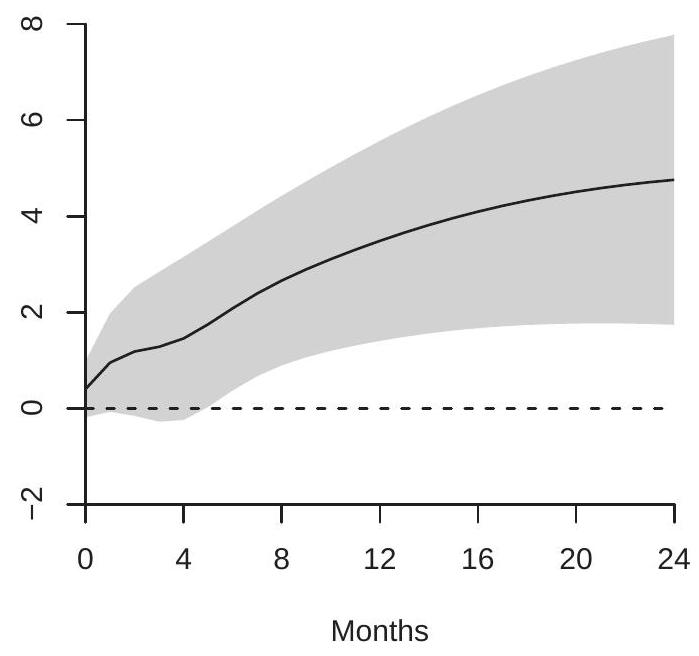

15 Multivariate Time Series
15.1 Introduction
A multivariate time series \(Y_{t}=\left(Y_{1 t}, \ldots, Y_{m t}\right)^{\prime}\) is an \(m \times 1\) vector process observed in sequence over time, \(t=1, \ldots, n\). Multivariate time series models primarily focus on the joint modeling of the vector series \(Y_{t}\). The most common multivariate time series models used by economists are vector autoregressions (VARs). VARs were introduced to econometrics by Sims (1980).
Some excellent textbooks and review articles on multivariate time series include Hamilton (1994), Watson (1994), Canova (1995), Lütkepohl (2005), Ramey (2016), Stock and Watson (2016), and Kilian and Lütkepohl (2017).
15.2 Multiple Equation Time Series Models
To motivate vector autoregressions let us start by reviewing the autoregressive distributed lag model of Section \(14.41\) for the case of two series \(Y_{t}=\left(Y_{1 t}, Y_{2 t}\right)^{\prime}\) with a single lag. An AR-DL model for \(Y_{1 t}\) is
\[ Y_{1 t}=\alpha_{0}+\alpha_{1} Y_{1 t-1}+\beta_{1} Y_{2 t-1}+e_{1 t} . \]
Similarly, an AR-DL model for \(Y_{2 t}\) is
\[ Y_{2 t}=\gamma_{0}+\gamma_{1} Y_{2 t-1}+\delta_{1} Y_{1 t-1}+e_{2 t} . \]
These two equations specify that each variable is a linear function of its own lag and the lag of the other variable. In so doing we find that the variables on the right hand side of each equation are \(Y_{t-1}\).
We can simplify the equations by combining the regressors stacking the two equations together and writing the vector error as \(e_{t}=\left(e_{1 t}, e_{2 t}\right)^{\prime}\) to find
\[ Y_{t}=a_{0}+\boldsymbol{A}_{1} Y_{t-1}+e_{t} \]
where \(a_{0}\) is \(2 \times 1\) and \(\boldsymbol{A}_{1}\) is \(2 \times 2\). This is a bivariate vector autoregressive model for \(Y_{t}\). It specifies that the multivariate process \(Y_{t}\) is a linear function of its own lag \(Y_{t-1}\) plus \(e_{t}\). It is the combination of two equations each of which is an autoregressive distributed lag model. Thus a multivariate autoregression is a set of autoregressive distributed lag models.
The above derivation assumed a single lag. If the equations include \(p\) lags of each variable we obtain the \(p^{t h}\) order vector autoregressive (VAR) model
\[ Y_{t}=a_{0}+\boldsymbol{A}_{1} Y_{t-1}+\boldsymbol{A}_{2} Y_{t-2}+\cdots+\boldsymbol{A}_{p} Y_{t-p}+e_{t} . \]
Furthermore, there is nothing special about the two variable case. The notation in (15.1) allows \(Y_{t}=\) \(\left(Y_{1 t}, \ldots, Y_{m t}\right)^{\prime}\) to be a vector of dimension \(m\) in which case the matrices \(\boldsymbol{A}_{\ell}\) are \(m \times m\) and the error \(\boldsymbol{e}_{t}\) is \(m \times 1\). We will denote the elements of \(\boldsymbol{A}_{\ell}\) using the notation
\[ \boldsymbol{A}_{\ell}=\left[\begin{array}{cccc} a_{11, \ell} & a_{12, \ell} & \cdots & a_{1 m, \ell} \\ a_{21, \ell} & a_{22, \ell} & \cdots & a_{2 m, \ell} \\ \vdots & \vdots & & \vdots \\ a_{m 1, \ell} & a_{m 2, \ell} & \cdots & a_{m m, \ell} \end{array}\right] \]
The error \(e_{t}=\left(e_{1 t}, \ldots, e_{m t}\right)^{\prime}\) is the component of \(Y_{t}\) which is unforecastable at time \(t-1\). However, the components of \(Y_{t}\) are contemporaneously correlated. Therefore the contemporaneous covariance matrix \(\Sigma=\mathbb{E}\left[e e^{\prime}\right]\) is non-diagonal.
The VAR model falls in the class of multivariate regression models studied in Chapter 11.
In the following several sections we take a step back and provide a rigorous foundation for vector autoregressions for stationary time series.
15.3 Linear Projection
In Section \(14.14\) we derived the linear projection of the univariate series \(Y_{t}\) on its infinite past history. We now extend this to the multivariate case. Define the multivariate infinite past history \(\widetilde{Y}_{t-1}=\) \(\left(\ldots, Y_{t-2}, Y_{t-1}\right)\). The projection of \(Y_{t}\) onto \(\widetilde{Y}_{t-1}\), written \(\mathscr{P}_{t-1}\left[Y_{t}\right]=\mathscr{P}\left[Y_{t} \mid \widetilde{Y}_{t-1}\right]\), is unique and has a unique projection error
\[ e_{t}=Y_{t}-\mathscr{P}_{t-1}\left[Y_{t}\right] . \]
We will call the projection errors \(e_{t}\) the “innnovations”.
The innovations \(e_{t}\) are mean zero and serially uncorrelated. We state this formally.
Theorem 15.1 If \(Y_{t}\) is covariance stationary it has the projection equation
\[ Y_{t}=\mathscr{P}_{t-1}\left[Y_{t}\right]+e_{t} . \]
The innovations \(e_{t}\) satisfy \(\mathbb{E}\left[e_{t}\right]=0\), \(\mathbb{E}\left[e_{t-\ell} e_{t}^{\prime}\right]=0\) for \(\ell \geq 1\), and \(\Sigma=\mathbb{E}\left[e e^{\prime}\right]<\infty\). If \(Y_{t}\) is strictly stationary then \(e_{t}\) is strictly stationary.
The uncorrelatedness of the projection errors is a property of a multivariate white noise process.
Definition 15.1 The vector process \(e_{t}\) is multivariate white noise if \(\mathbb{E}\left[e_{t}\right]=0\), \(\mathbb{E}\left[e_{t} e_{t}^{\prime}\right]=\Sigma<\infty\), and \(\mathbb{E}\left[e_{t} e_{t-\ell}^{\prime}\right]=0\) for \(\ell \neq 0\)
15.4 Multivariate Wold Decomposition
By projecting \(Y_{t}\) onto the past history of the white noise innovations \(e_{t}\) we obtain a multivariate version of the Wold decomposition.
Theorem 15.2 If \(Y_{t}\) is covariance stationary and non-deterministic then it has the linear representation
\[ Y_{t}=\mu+\sum_{\ell=0}^{\infty} \Theta_{\ell} e_{t-\ell} \]
where \(e_{t}\) are the white noise projection errors and \(\Theta_{0}=\boldsymbol{I}_{m}\). The coefficient matrices \(\Theta_{\ell}\) are \(m \times m\).
We can write the moving average representation using the lag operator notation as
\[ Y_{t}=\mu+\Theta(\mathrm{L}) e_{t} \]
where
\[ \Theta(z)=\sum_{\ell=0}^{\infty} \Theta_{\ell} z^{\ell} . \]
A multivariate version of Theorem \(14.19\) can also be established.
Theorem 15.3 If \(Y_{t}\) is covariance stationary, non-deterministic, with Wold representation \(Y_{t}=\Theta(\mathrm{L}) e_{t}\), such that \(\lambda_{\min }\left(\Theta^{*}(z) \Theta(z)\right) \geq \delta>0\) for all complex \(|z| \leq 1\), and for some integer \(s \geq 0\) the Wold coefficients satisfy \(\sum_{j=0}^{\infty}\left\|\sum_{k=0}^{\infty} k^{s} \Theta_{j+k}\right\|^{2}<\infty\), then \(Y_{t}\) has an infinite-order autoregressive representation
\[ \boldsymbol{A} \text { (L) } Y_{t}=a_{0}+e_{t} \]
where
\[ \boldsymbol{A}(z)=\boldsymbol{I}_{m}-\sum_{\ell=1}^{\infty} \boldsymbol{A}_{\ell} z^{\ell} \]
and the coefficients satisfy \(\sum_{k=1}^{\infty} k^{s}\left\|\boldsymbol{A}_{k}\right\|<\infty\). The series in (15.4) is convergent.
For a proof see Section 2 of Meyer and Kreiss (2015).
We can also provide an analog of Theorem 14.6.
Theorem 15.4 If \(e_{t} \in \mathbb{R}^{m}\) is strictly stationary, ergodic, \(\mathbb{E}\left\|e_{t}\right\|<\infty\), and \(\sum_{\ell=0}^{\infty}\left\|\Theta_{\ell}\right\|<\infty\), then \(Y_{t}=\sum_{\ell=0}^{\infty} \Theta_{\ell} e_{t-\ell}\) is strictly stationary and ergodic. The proof of Theorem \(15.4\) is a straightforward extension of Theorem \(14.6\) so is omitted.
The moving average and autoregressive lag polynomials satisfy the relationship \(\Theta(z)=\boldsymbol{A}(z)^{-1}\).
For some purposes (such as impulse response calculations) we need to calculate the moving average coefficient matrices \(\Theta_{\ell}\) from the autoregressive coefficient matrices \(\boldsymbol{A}_{\ell}\). While there is not a closed-form solution there is a simple recursion by which the coefficients may be calculated.
Theorem 15.5 For \(j \geq 1, \Theta_{j}=\sum_{\ell=1}^{j} A_{\ell} \Theta_{j-\ell}\).
To see this, suppose for simplicity \(a_{0}=0\) and that the innovations satisfy \(e_{t}=0\) for \(t \neq 0\). Then \(Y_{t}=0\) for \(t<0\). Using the regression equation (15.4) for \(t \geq 0\) we solve for each \(Y_{t}\). For \(t=0\)
\[ Y_{0}=e_{0}=\Theta_{0} e_{0} \]
where \(\Theta_{0}=\boldsymbol{I}_{m}\). For \(t=1\)
\[ Y_{1}=\boldsymbol{A}_{1} Y_{0}=\boldsymbol{A}_{1} \Theta_{0} e_{0}=\Theta_{1} e_{0} \]
where \(\Theta_{1}=A_{1} \Theta_{0}\). For \(t=2\)
\[ Y_{2}=\boldsymbol{A}_{1} Y_{1}+\boldsymbol{A}_{2} Y_{0}=\boldsymbol{A}_{1} \Theta_{1} e_{0}+\boldsymbol{A}_{2} \Theta_{0} e_{0}=\Theta_{2} e_{0} \]
where \(\Theta_{2}=A_{1} \Theta_{1}+A_{2} \Theta_{0}\). For \(t=3\)
\[ Y_{3}=\boldsymbol{A}_{1} Y_{2}+\boldsymbol{A}_{2} Y_{1}+\boldsymbol{A}_{3} Y_{0}=\boldsymbol{A}_{1} \Theta_{2} e_{0}+\boldsymbol{A}_{2} \Theta_{1} e_{0}+\boldsymbol{A}_{3} \Theta_{0} e_{0}=\Theta_{3} e_{0} \]
where \(\Theta_{3}=\boldsymbol{A}_{1} \Theta_{2}+\boldsymbol{A}_{2} \Theta_{2}+\boldsymbol{A}_{2} \Theta_{0}\). The coefficients satisfy the stated recursion as claimed.
15.5 Impulse Response
One of the most important concepts in applied multivariate time series is the impulse response function (IRF) which is defined as the change in \(Y_{t}\) due to a change in an innovation or shock. In this section we define the baseline IRF - the unnormalized non-orthogonalized impulse response function - which is the change in \(Y_{t}\) due to a change in an innovation \(e_{t}\). Specifically, we define the impulse response of variable \(i\) with respect to innovation \(j\) as the change in the time \(t\) projection of the \(i^{t h}\) variable \(Y_{i t+h}\) due to the \(j^{t h}\) innovation \(e_{j t}\)
\[ \operatorname{IRF}_{i j}(h)=\frac{\partial}{\partial e_{j t}} \mathscr{P}_{t}\left[Y_{i t+h}\right] . \]
There are \(m^{2}\) such responses for each horizon \(h\). We can write them as an \(m \times m\) matrix
\[ \operatorname{IRF}(h)=\frac{\partial}{\partial e_{t}^{\prime}} \mathscr{P}_{t}\left[Y_{t+h}\right] . \]
Recall the multivariate Wold representation
\[ Y_{t}=\mu+\sum_{\ell=0}^{\infty} \Theta_{\ell} e_{t-\ell} . \]
We can calculate that the projection onto the history at time \(t\) is
\[ \mathscr{P}_{t}\left[Y_{t+h}\right]=\mu+\sum_{\ell=h}^{\infty} \Theta_{\ell} e_{t+h-\ell}=\mu+\sum_{\ell=0}^{\infty} \Theta_{h+\ell} e_{t-\ell} . \]
We deduce that the impulse response matrix is \(\operatorname{IRF}(h)=\Theta_{h}\), the \(h^{t h}\) moving average coefficient matrix. The invididual impulse response is \(\operatorname{IRF}_{i j}(h)=\Theta_{h, i j}\), the \(i j^{t h}\) element of \(\Theta_{h}\).
Here we have defined the impulse response in terms of the linear projection operator. An alternative is to define the impulse response in terms of the conditional expectation operator. The two coincide when the innovations \(e_{t}\) are a martingale difference sequence (and thus when the true process is linear) but otherwise will not coincide.
Typically we view impulse responses as a function of the horizon \(h\) and plot them as a function of \(h\) for each pair \((i, j)\). The impulse response function \(\operatorname{IRF}_{i j}(h)\) is interpreted as how the \(i^{t h}\) variable responds over time to the \(j^{t h}\) innovation.
In a linear vector autoregression the impulse response function is symmetric in negative and positive innovations. That is, the impact on \(Y_{i t+h}\) of a positive innovation \(e_{j t}=1\) is \(\operatorname{IRF}_{i j}(h)\) and the impact of a negative innovation \(e_{j t}=-1\) is \(-\operatorname{IRF}_{i j}(h)\). Furthermore, the magnitude of the impact is linear in the magnitude of the innovation. Thus the impact of the innovation \(e_{j t}=2\) is \(2 \times \operatorname{IRF}_{i j}(h)\) and the impact of the innovation \(e_{j t}=-2\) is \(-2 \times \operatorname{IRF}_{i j}(h)\). This means that the shape of the impulse response function is unaffected by the magnitude of the innovation. (These are consequences of the linearity of the vector autoregressive model, not necessarily features of the true world.)
The impulse response functions can be scaled as desired. One standard choice is to scale so that the innovations correspond to one unit of the impulse variable. Thus if the impulse variable is measured in dollars the impulse response can be scaled to correspond to a change in \(\$ 1\) or some multiple such as a million dollars. If the impulse variable is measured in percentage points (e.g. an interest rate) then the impulse response can be scaled to correspond to a change of one percentage point (e.g. from 3% to \(4 %\) ) or to correspond to a change of one basis point (e.g. from 3.05% to 3.06%). Another standard choice is to scale the impulse responses to correspond to a “one standard deviation” innovation. This occurs when the innovations have been scaled to have unit variances. In this latter case impulse response functions can be interpreted as responses due to a “typical” sized (one standard deviation) innovation.
Closely related to the IRF is the cumulative impulse response function (CIRF) defined as
\[ \operatorname{CIRF}(h)=\sum_{\ell=1}^{h} \frac{\partial}{\partial e_{t}^{\prime}} \mathscr{P}_{t}\left[Y_{t+\ell}\right]=\sum_{\ell=1}^{h} \Theta_{\ell} . \]
The cumulative impulse response is the accumulated (summed) responses on \(Y_{t}\) from time \(t\) to \(t+h\). The limit of the cumulative impulse response as \(h \rightarrow \infty\) is the long-run impulse response matrix
\[ \boldsymbol{C}=\lim _{h \rightarrow \infty} \operatorname{CIRF}(h)=\sum_{\ell=1}^{\infty} \Theta_{\ell}=\Theta(1)=\boldsymbol{A}(1)^{-1} . \]
This is the full (summed) effect of the innovation over all time.
It is useful to observe that when a VAR is estimated on differenced observations \(\Delta Y_{t}\) then cumulative impulse response is
\[ \operatorname{CIRF}(h)=\frac{\partial}{\partial e_{t}^{\prime}} \mathscr{P}_{t}\left[\sum_{\ell=1}^{h} \Delta Y_{t+\ell}\right]=\frac{\partial}{\partial e_{t}^{\prime}} \mathscr{P}_{t}\left[Y_{t+h}\right] \]
which is the impulse response for the variable \(Y_{t}\) in levels. More generally, when a VAR is estimated with some variables in levels and some in differences then the cumulative impulse response for the second group will coincide with the impulse responses for the same variables measured in levels. It is typical to report cumulative impulse response functions for variables which enter a VAR in differences. In fact, in this context many authors will label the cumulative impulse response as “the impulse response”.
15.6 VAR(1) Model
The first-order vector autoregressive process, denoted VAR(1), is
\[ Y_{t}=a_{0}+A_{1} Y_{t-1}+e_{t} \]
where \(e_{t}\) is a strictly stationary and ergodic white noise process.
We are interested in conditions under which \(Y_{t}\) is a stationary process. Let \(\lambda_{i}(\boldsymbol{A})\) denote the \(i^{\text {th }}\) eigenvalue of \(\boldsymbol{A}\).
Theorem 15.6 If \(e_{t}\) is strictly stationary, ergodic, \(\mathbb{E}\left\|e_{t}\right\|<\infty\), and \(\left|\lambda_{i}\left(A_{1}\right)\right|<1\) for \(i=1, \ldots, m\), then the \(\operatorname{VAR}(1)\) process \(Y_{t}\) is strictly stationary and ergodic.
The proof is given in Section 15.31.
15.7 \(\operatorname{VAR}(\mathrm{p})\) Model
The \(\mathbf{p}^{\text {th }}\)-order vector autoregressive process, denoted VAR(p), is
\[ Y_{t}=a_{0}+\boldsymbol{A}_{1} Y_{t-1}+\cdots+\boldsymbol{A}_{p} Y_{t-p}+e_{t} \]
where \(e_{t}\) is a strictly stationary and ergodic white noise process.
We can write the model using the lag operator notation as
\[ \boldsymbol{A} \text { (L) } Y_{t}=a_{0}+e_{t} \]
where
\[ \boldsymbol{A}(z)=\boldsymbol{I}_{m}-\boldsymbol{A}_{1} z-\cdots-\boldsymbol{A}_{p} z^{p} . \]
The condition for stationarity of the system can be expressed as a restriction on the roots of the determinantal equation of the autoregressive polynomial. Recall, a \(\operatorname{root} r\) of \(\operatorname{det}(\boldsymbol{A}(z))\) is a solution to \(\operatorname{det}(\boldsymbol{A}(r))=0\).
Theorem \(15.7\) If all roots \(r\) of \(\operatorname{det}(\boldsymbol{A}(z))\) satisfy \(|r|>1\) then the \(\operatorname{VAR}(\mathrm{p})\) process \(Y_{t}\) is strictly stationary and ergodic.
The proof is structurally identical to that of Theorem \(14.23\) so is omitted.
15.8 Regression Notation
Define the \((m p+1) \times 1\) vector
\[ X_{t}=\left(\begin{array}{c} 1 \\ Y_{t-1} \\ Y_{t-2} \\ \vdots \\ Y_{t-p} \end{array}\right) \]
and the \(m \times(m p+1)\) matrix \(\boldsymbol{A}^{\prime}=\left(\begin{array}{lllll}a_{0} & \boldsymbol{A}_{1} & \boldsymbol{A}_{2} & \cdots & \boldsymbol{A}_{p}\end{array}\right)\). Then the VAR system of equations can be written as
\[ Y_{t}=\boldsymbol{A}^{\prime} X_{t}+e_{t} . \]
This is a multivariate regression model. The error has covariance matrix
\[ \Sigma=\mathbb{E}\left[e_{t} e_{t}^{\prime}\right] . \]
We can also write the coefficient matrix as \(\boldsymbol{A}=\left(\begin{array}{llll}a_{1} & a_{2} & \cdots & a_{m}\end{array}\right)\) where \(a_{j}\) is the vector of coefficients for the \(j^{t h}\) equation. Thus \(Y_{j t}=a_{j}^{\prime} X_{t}+e_{j t}\).
In general, if \(Y_{t}\) is strictly stationary we can define the coefficient matrix \(\boldsymbol{A}\) by linear projection.
\[ \boldsymbol{A}=\left(\mathbb{E}\left[X_{t} X_{t}^{\prime}\right]\right)^{-1} \mathbb{E}\left[X_{t} Y_{t}^{\prime}\right] . \]
This holds whether or not \(Y_{t}\) is actually a \(\operatorname{VAR}(\mathrm{p})\) process. By the properties of projection errors
\[ \mathbb{E}\left[X_{t} e_{t}^{\prime}\right]=0 . \]
The projection coefficient matrix \(\boldsymbol{A}\) is identified if \(\mathbb{E}\left[X_{t} X_{t}^{\prime}\right]\) is invertible.
Theorem \(15.8\) If \(Y_{t}\) is strictly stationary and \(0<\Sigma<\infty\) for \(\Sigma\) defined in (15.6), then \(\boldsymbol{Q}=\mathbb{E}\left[X_{t} X_{t}^{\prime}\right]>0\) and the coefficient vector (14.46) is identified.
The proof is given in Section 15.31.
15.9 Estimation
From Chapter 11 the systems estimator of a multivariate regression is least squares. The estimator can be written as
\[ \widehat{\boldsymbol{A}}=\left(\sum_{t=1}^{n} X_{t} X_{t}^{\prime}\right)^{-1}\left(\sum_{t=1}^{n} X_{t} Y_{t}^{\prime}\right) . \]
Alternatively, the coefficient estimator for the \(j^{t h}\) equation is
\[ \widehat{a}_{j}=\left(\sum_{t=1}^{n} X_{t} X_{t}^{\prime}\right)^{-1}\left(\sum_{t=1}^{n} X_{t} Y_{j t}\right) . \]
The least squares residual vector is \(\widehat{e}_{t}=Y_{t}-\widehat{A}^{\prime} X_{t}\). The estimator of the covariance matrix is
\[ \widehat{\Sigma}=\frac{1}{n} \sum_{t=1}^{n} \widehat{e}_{t} \widehat{e}_{t}^{\prime} . \]
(This may be adjusted for degrees-of-freedom if desired, but there is no established finite-sample justification for a specific adjustment.)
If \(Y_{t}\) is strictly stationary and ergodic with finite variances then we can apply the Ergodic Theorem (Theorem 14.9) to deduce that
\[ \frac{1}{n} \sum_{t=1}^{n} X_{t} Y_{t}^{\prime} \underset{p}{\longrightarrow} \mathbb{E}\left[X_{t} Y_{t}^{\prime}\right] \]
and
\[ \sum_{t=1}^{n} X_{t} X_{t}^{\prime} \underset{p}{\longrightarrow} \mathbb{E}\left[X_{t} X_{t}^{\prime}\right] . \]
Since the latter is positive definite by Theorem \(15.8\) we conclude that \(\widehat{\boldsymbol{A}}\) is consistent for \(\boldsymbol{A}\). Standard manipulations show that \(\widehat{\Sigma}\) is consistent as well.
Theorem 15.9 If \(Y_{t}\) is strictly stationary, ergodic, and \(0<\Sigma<\infty\) then \(\widehat{A} \underset{p}{\rightarrow} A\) and \(\widehat{\Sigma} \underset{p}{\longrightarrow} \Sigma\) as \(n \rightarrow \infty\)
VAR models can be estimated in Stata using the var command.
15.10 Asymptotic Distribution
Set
\[ a=\operatorname{vec}(\boldsymbol{A})=\left(\begin{array}{c} a_{1} \\ \vdots \\ a_{m} \end{array}\right), \quad \widehat{a}=\operatorname{vec}(\widehat{\boldsymbol{A}})=\left(\begin{array}{c} \widehat{a}_{1} \\ \vdots \\ \widehat{a}_{m} \end{array}\right) . \]
By the same analysis as in Theorem \(14.30\) combined with Theorem \(11.1\) we obtain the following.
Theorem 15.10 Suppose that \(Y_{t}\) follows the \(\operatorname{VAR}(\mathrm{p})\) model, all roots \(r\) of \(\operatorname{det}(\boldsymbol{A}(z))\) satisfy \(|r|>1\), \(\mathbb{E}\left[e_{t} \mid \mathscr{F}_{t-1}\right]=0, \mathbb{E}\left\|e_{t}\right\|^{4}<\infty\), and \(\Sigma>0\), then as \(n \rightarrow \infty\), \(\sqrt{n}(\widehat{a}-a) \underset{d}{\longrightarrow} \mathrm{N}(0, V)\) where
\[ \begin{aligned} \boldsymbol{V} &=\overline{\boldsymbol{Q}}^{-1} \Omega \overline{\boldsymbol{Q}}^{-1} \\ \overline{\boldsymbol{Q}} &=\boldsymbol{I}_{m} \otimes \boldsymbol{Q} \\ \boldsymbol{Q} &=\mathbb{E}\left[X_{t} X_{t}^{\prime}\right] \\ \Omega &=\mathbb{E}\left[e_{t} e_{t}^{\prime} \otimes X_{t} X_{t}^{\prime}\right] . \end{aligned} \]
Notice that the theorem uses the strong assumption that the innovation is a martingale difference sequence \(\mathbb{E}\left[e_{t} \mid \mathscr{F}_{t-1}\right]=0\). This means that the \(\operatorname{VAR}(\mathrm{p})\) model is the correct conditional expectation for each variable. In words, these are the correct lags and there is no omitted nonlinearity.
If we further strengthen the MDS assumption to conditional homoskedasticity
\[ \mathbb{E}\left[e_{t} e_{t}^{\prime} \mid \mathscr{F}_{t-1}\right]=\Sigma \]
then the asymptotic variance simplifies as
\[ \begin{aligned} &\Omega=\Sigma \otimes \boldsymbol{Q} \\ &\boldsymbol{V}=\Sigma \otimes \boldsymbol{Q}^{-1} . \end{aligned} \]
In contrast, if the VAR(p) is an approximation then the MDS assumption is not appropriate. In this case the asymptotic distribution can be derived under mixing conditions.
Theorem 15.11 Assume that \(Y_{t}\) is strictly stationary, ergodic, and for some \(r>\) \(4, \mathbb{E}\left\|Y_{t}\right\|^{r}<\infty\) and the mixing coefficients satisfy \(\sum_{\ell=1}^{\infty} \alpha(\ell)^{1-4 / r}<\infty\). Let \(a\) be the projection coefficient vector and \(e_{t}\) the projection error. Then as \(n \rightarrow \infty\), \(\sqrt{n}(\widehat{a}-a) \underset{d}{\longrightarrow} \mathrm{N}(0, V)\) where
\[ \begin{aligned} &\boldsymbol{V}=\left(\boldsymbol{I}_{m} \otimes \boldsymbol{Q}^{-1}\right) \Omega\left(\boldsymbol{I}_{m} \otimes \boldsymbol{Q}^{-1}\right) \\ &\boldsymbol{Q}=\mathbb{E}\left[X_{t} X_{t}^{\prime}\right] \\ &\Omega=\sum_{\ell=-\infty}^{\infty} \mathbb{E}\left[e_{t-\ell} e_{t}^{\prime} \otimes X_{t-\ell} X_{t}^{\prime}\right] . \end{aligned} \]
This theorem does not require that the true process is a VAR. Instead, the coefficients are defined as those which produce the best (mean square) approximation, and the only requirements on the true process are general dependence conditions. The theorem shows that the coefficient estimators are asymptotically normal with a covariance matrix which takes a “long-run” sandwich form.
15.11 Covariance Matrix Estimation
The classic homoskedastic estimator of the covariance matrix for \(\widehat{a}\) equals
\[ \widehat{\boldsymbol{V}}_{\widehat{a}}^{0}=\widehat{\Sigma} \otimes\left(\boldsymbol{X}^{\prime} \boldsymbol{X}\right)^{-1} . \]
Estimators adjusted for degree-of-freedom can also be used though there is no established finite-sample justification. This variance estimator is appropriate under the assumption that the conditional expectation is correctly specified as a \(\operatorname{VAR}(\mathrm{p})\) and the innovations are conditionally homoskedastic.
The heteroskedasticity-robust estimator equals
\[ \widehat{\boldsymbol{V}}_{\widehat{a}}=\left(\boldsymbol{I}_{n} \otimes\left(\boldsymbol{X}^{\prime} \boldsymbol{X}\right)^{-1}\right)\left(\sum_{t=1}^{n}\left(\widehat{e}_{t} \widehat{e}_{t}^{\prime} \otimes X_{t} X_{t}^{\prime}\right)\right)\left(\boldsymbol{I}_{n} \otimes\left(\boldsymbol{X}^{\prime} \boldsymbol{X}\right)^{-1}\right) . \]
This variance estimator is appropriate under the assumption that the conditional expectation is correctly specified as a \(\operatorname{VAR}(\mathrm{p})\) but does not require that the innovations are conditionally homoskedastic. The Newey-West estimator equals
\[ \begin{aligned} \widehat{\boldsymbol{V}}_{\widehat{a}} &=\left(\boldsymbol{I}_{n} \otimes\left(\boldsymbol{X}^{\prime} \boldsymbol{X}\right)^{-1}\right) \widehat{\Omega}_{M}\left(\boldsymbol{I}_{n} \otimes\left(\boldsymbol{X}^{\prime} \boldsymbol{X}\right)^{-1}\right) \\ \widehat{\Omega}_{M} &=\sum_{\ell=-M}^{M} w_{\ell} \sum_{1 \leq t-\ell \leq n}\left(\widehat{e}_{t-\ell} \otimes X_{t-\ell}\right)\left(\widehat{e}_{t} \otimes X_{t}^{\prime}\right) \\ w_{\ell} &=1-\frac{|\ell|}{M+1} . \end{aligned} \]
The number \(M\) is called the lag truncation number. An unweighted version sets \(w_{\ell}=1\). The Newey-West estimator does not require that the \(\operatorname{VAR}(\mathrm{p})\) is correctly specified.
Traditional textbooks have only used the homoskedastic variance estimation formula (15.9) and consequently existing software follows the same convention. For example, the var command in Stata displays only homoskedastic standard errors. Some researchers use the heteroskedasticity-robust estimator (15.10). The Newey-West estimator (15.11) is not commonly used for VAR models.
Asymptotic approximations tend to be much less accurate under time series dependence than for independent observations. Therefore bootstrap methods are popular. In Section \(14.46\) we described several bootstrap methods for time series observations. While Section \(14.46\) focused on univariate time series, the extension to multivariate observations is straightforward.
15.12 Selection of Lag Length in an VAR
For a data-dependent rule to pick the lag length \(p\) it is recommended to minimize an information criterion. The formula for the AIC is
\[ \begin{aligned} \operatorname{AIC}(p) &=n \log \operatorname{det} \widehat{\Sigma}(p)+2 K(p) \\ \widehat{\Sigma}(p) &=\frac{1}{n} \sum_{t=1}^{n} \widehat{e}_{t}(p) \widehat{e}_{t}(p)^{\prime} \\ K(p) &=m(p m+1) \end{aligned} \]
where \(K(p)\) is the number of parameters and \(\widehat{e}_{t}(p)\) is the OLS residual vector from the model with \(p\) lags. The log determinant is the criterion from the multivariate normal likelihood.
In Stata the AIC for a set of estimated VAR models can be compared using the varsoc command. It should be noted, however, that the Stata routine actually displays \(\operatorname{AIC}(p) / n=\log \operatorname{det} \widehat{\Sigma}(p)+2 K(p) / n\). This does not affect the ranking of the models but makes the differences between models appear misleadingly small.
15.13 Illustration
We estimate a three-variable system which is a simplified version of a model often used to study the impact of monetary policy. The three variables are quarterly from FRED-QD: real GDP growth rate \(\left(100 \Delta \log \left(G D P_{t}\right)\right)\), GDP inflation rate \(\left(100 \Delta \log \left(P_{t}\right)\right)\), and the Federal funds interest rate. VARs from lags 1 through 8 were estimated by least squares. The model with the smallest AIC is the VAR(6). The coefficient estimates and (homoskedastic) standard errors for the VAR(6) are reported in Table 15.1.
Examining the coefficients in the table we can see that GDP displays a moderate degree of serial correlation and shows a large response to the federal funds rate, especially at lags 2 and 3. Inflation also displays serial correlation, shows minimal response to GDP, and also has meaningful response to the federal funds rate. The federal funds rate has the strongest serial correlation. Overall, it is difficult to read too much meaning into the coefficient estimates due to the complexity of the interactions. Because of this difficulty it is typical to focus on other representations of the coefficient estimates such as impulse responses which we discuss in the upcoming sections.
15.14 Predictive Regressions
In some contexts (including prediction) it is useful to consider models where the dependent variable is dated multiple periods ahead of the right-hand-side variables. These equations can be single equation or multivariate; we can consider both as special cases of a VAR (as a single equation model can be written as one equation taken from a VAR system). An \(h\)-step predictive VAR(p) takes the form
\[ Y_{t+h}=b_{0}+\boldsymbol{B}_{1} Y_{t}+\cdots+\boldsymbol{B}_{p} Y_{t-p+1}+u_{t} . \]
The integer \(h \geq 1\) is the horizon. A one-step predictive VAR equals a standard VAR. The coefficients should be viewed as the best linear predictors of \(Y_{t+h}\) given \(\left(Y_{t}, \ldots, Y_{t-p+1}\right)\).
There is an interesting relationship between a VAR model and the corresponding \(h\)-step predictive VAR model.
Theorem 15.12 If \(Y_{t}\) is a \(\operatorname{VAR}(\mathrm{p})\) process then its \(h\)-step predictive regression is a predictive \(\operatorname{VAR}(\mathrm{p})\) with \(u_{t}\) a MA(h-1) process and \(\boldsymbol{B}_{1}=\Theta_{h}=\operatorname{IRF}(h)\).
The proof of Theorem \(15.12\) is presented in Section 15.31.
There are several implications of this theorem. First, if \(Y_{t}\) is a \(\operatorname{VAR}(\mathrm{p})\) process then the correct number of lags for an \(h\)-step predictive regression is also \(p\) lags. Second, the error in a predictive regression is a MA process and is thus serially correlated. The linear dependence, however, is capped by the horizon. Third, the leading coefficient matrix corresponds to the \(h^{\text {th }}\) moving average coefficient matrix which also equals the \(h^{\text {th }}\) impulse response matrix.
The predictive regression (15.12) can be estimated by least squares. We can write the estimates as
\[ Y_{t+h}=\widehat{b}_{0}+\widehat{\boldsymbol{B}}_{1} Y_{t}+\cdots+\widehat{\boldsymbol{B}}_{p} Y_{t-p+1}+\widehat{u}_{t} . \]
For a distribution theory we need to apply Theorem \(15.11\) since the innovations \(u_{t}\) are a moving average and thus violate the MDS assumption. It follows as well that the covariance matrix for the estimators should be estimated by the Newey-West (15.11) estimator. There is a difference, however. Since \(u_{t}\) is known to be a MA(h-1) a reasonable choice is to set \(M=h-1\) and use the simple weights \(w_{\ell}=1\). Indeed, this was the original suggestion by L. Hansen and Hodrick (1980).
For a distributional theory we can apply Theorem 15.11. Let \(b\) be the vector of coefficients in (15.12) and \(\widehat{b}\) the corresponding least squares estimator. Let \(X_{t}\) be the vector of regressors in (15.12). Table 15.1: Vector Autoregression
| \(G D P_{t-1}\) | \(0.25\) | \(0.01\) | \(0.08\) |
|---|---|---|---|
| \((0.07)\) | \((0.02)\) | \((0.02)\) | |
| \(G D P_{t-2}\) | \(0.23\) | \(-0.02\) | \(0.04\) |
| \((0.07)\) | \((0.02)\) | \((0.02)\) | |
| \(G D P_{t-3}\) | \(0.00\) | \(0.03\) | \(0.01\) |
| \((0.07)\) | \((0.02)\) | \((0.02)\) | |
| \(G D P_{t-4}\) | \(0.14\) | \(0.04\) | \(-0.02\) |
| \((0.07)\) | \((0.02)\) | \((0.02)\) | |
| \(G D P_{t-5}\) | \(-0.02\) | \(-0.03\) | \(0.04\) |
| \((0.07)\) | \((0.02)\) | \((0.02)\) | |
| \(G D P_{t-6}\) | \(0.05\) | \(-0.00\) | \(-0.01\) |
| \((0.06)\) | \((0.02)\) | \((0.02)\) | |
| \(I N F_{t-1}\) | \(0.11\) | \(0.57\) | \(0.01\) |
| \((0.20)\) | \((0.07)\) | \((0.05)\) | |
| \(I N F_{t-2}\) | \(-0.17\) | \(0.10\) | \(0.17\) |
| \((0.23)\) | \((0.08)\) | \((0.06)\) | |
| \(I N F_{t-3}\) | \(0.01\) | \(0.09\) | \(-0.05\) |
| \((0.23)\) | \((0.08)\) | \((0.06)\) | |
| \(I N F_{t-4}\) | \(0.16\) | \(0.14\) | \(-0.05\) |
| \((0.23)\) | \((0.08)\) | \((0.06)\) | |
| \(I N F_{t-5}\) | \(0.12\) | \(-0.05\) | \(-0.05\) |
| \((0.24)\) | \((0.08)\) | \((0.06)\) | |
| \(I N F_{t-6}\) | \(-0.14\) | \(0.10\) | \(0.09\) |
| \((0.21)\) | \((0.07)\) | \((0.05)\) | |
| \(F F_{t-1}\) | \(0.13\) | \(0.28\) | \(1.14\) |
| \((0.26)\) | \((0.08)\) | \((0.07)\) | |
| \(F F_{t-2}\) | \(-1.50\) | \(-0.27\) | \(-0.53\) |
| \((0.38)\) | \((0.12)\) | \((0.10)\) | |
| \(F F_{t-3}\) | \(1.40\) | \(0.12\) | \(0.53\) |
| \((0.40)\) | \((0.13)\) | \((0.10)\) | |
| \(F F_{t-4}\) | \(-0.57\) | \(-0.13\) | \(-0.28\) |
| \((0.41)\) | \((0.13)\) | \((0.11)\) | |
| \(0.01\) | \(0.25\) | \(0.28\) | |
| \((0.40)\) | \((0.13)\) | \((0.10)\) | |
| \(-0.27\) | \(-0.24\) | ||
| \((0.18)\) | \((0.14)\) |
Theorem 15.13 If \(Y_{t}\) is strictly stationary, ergodic, \(\Sigma>0\), and for some \(r>4\), \(\mathbb{E}\left\|Y_{t}\right\|^{r}<\infty\) and the mixing coefficients satisfy \(\sum_{\ell=1}^{\infty} \alpha(\ell)^{1-4 / r}<\infty\), then as \(n \rightarrow\) \(\infty, \sqrt{n}(\widehat{b}-b) \underset{d}{\longrightarrow} \mathrm{N}(0, V)\) where
\[ \begin{aligned} \boldsymbol{V} &=\left(\boldsymbol{I}_{m} \otimes \boldsymbol{Q}^{-1}\right) \Omega\left(\boldsymbol{I}_{m} \otimes \boldsymbol{Q}^{-1}\right) \\ \boldsymbol{Q} &=\mathbb{E}\left[X_{t} X_{t}^{\prime}\right] \\ \Omega &=\sum_{\ell=-\infty}^{\infty} \mathbb{E}\left[\left(\widehat{u}_{t-\ell} \otimes X_{t-\ell}\right)\left(\widehat{u}_{t}^{\prime} \otimes X_{t}^{\prime}\right)\right] . \end{aligned} \]
15.15 Impulse Response Estimation
Reporting of impulse response estimates is one of the most common applications of vector autoregressive modeling. There are several methods to estimate the impulse response function. In this section we review the most common estimator based on the estimated VAR parameters.
Within a VAR(p) model the impulse responses are determined by the VAR coefficients. We can write this mapping as \(\Theta_{h}=g_{h}(\boldsymbol{A})\). The plug-in approach suggests the estimator \(\widehat{\Theta}_{h}=g_{h}(\widehat{\boldsymbol{A}})\) given the \(\operatorname{VAR}(\mathrm{p})\) coefficient estimator \(\widehat{A}\). These are the impulse responses implied by the estimated VAR coefficients. While it is possible to explicitly write the function \(g_{h}(\boldsymbol{A})\), a computationally simple approach is to use Theorem \(15.5\) which shows that the impulse response matrices can be written as a simple recursion in the VAR coefficients. Thus the impulse response estimator satisfies the recursion
\[ \widehat{\Theta}_{h}=\sum_{\ell=1}^{\min [h, p]} \widehat{A}_{\ell} \widehat{\Theta}_{h-\ell} . \]
We then set \(\widehat{\operatorname{IRF}}(h)=\widehat{\Theta}_{h}\).
This is the the most commonly used method for impulse response estimation and it is the method implemented in standard packages.
Since \(\widehat{A}\) is random so is \(\widehat{\operatorname{IRF}}(h)\) as it is a nonlinear function of \(\widehat{\boldsymbol{A}}\). Using the delta method, we deduce that the elements of \(\widehat{\operatorname{IRF}}(h)\) (the impulse responses) are asymptotically normally distributed. With some messy algebra explicit expressions for the asymptotic variances can be obtained. Sample versions can be used to calculate asymptotic standard errors. These can be used to form asymptotic confidence intervals for the impulse responses.
The asymptotic approximations, however, can be poor. As we discussed earlier the asymptotic approximations for the distribution of the coefficients \(\widehat{A}\) can be poor due to the serial dependence in the observations. The asymptotic approximations for \(\widehat{\operatorname{IRF}}(h)\) can be significantly worse because the impulse responses are highly nonlinear functions of the coefficients. For example, in the simple AR(1) model with coefficient estimate \(\widehat{\alpha}\) the \(h^{\text {th }}\) impulse response is \(\widehat{\alpha}^{h}\) which is highly nonlinear for even moderate horizons \(h\).
Consequently, asymptotic approximations are less popular than bootstrap approximations. The most popular bootstrap approximation uses the recursive bootstrap (see Section 14.46) using the fitted VAR model and calculates confidence intervals for the impulse responses with the percentile method. An unfortunate feature of this choice is that the percentile bootstrap confidence interval is biased since the nonlinear impulse response estimates are biased and the percentile bootstrap accentuates bias. Some advantages of the estimation method as described is that it produces impulse response estimates which are directly related to the estimated \(\operatorname{VAR}(\mathrm{p})\) model and are internally consistent with one another. The method is also numerically stable. It is efficient when the true process is a true \(\operatorname{VAR}(\mathrm{p})\) with conditionally homoskedastic MDS innovations. When the true process is not a VAR(p) it can be thought of as a nonparametric estimator of the impulse response if \(p\) is large (or selected appropriately in a data-dependent fashion, such as by the AIC).
A disadvantage of this estimator is that it is a highly nonlinear function of the VAR coefficient estimators. Therefore the distribution of the impulse response estimator is unlikely to be well approximated by the normal distribution. When the \(\operatorname{VAR}(\mathrm{p})\) is not the true process then it is possible that the nonlinear transformation accentuates the misspecification bias.
Impulse response functions can be calculated and displayed in Stata using the irf command. The command irf create is used to calculate impulse response functions and confidence intervals. The default confidence intervals are asymptotic (delta method). Bootstrap (recursive method) standard errors can be substituted using the bs option. The command irf graph irf produces graphs of the impulse response function along with \(95 %\) asymptotic confidence intervals. The command irf graph cirf produces the cumulative impulse response function. It may be useful to know that the impulse response estimates are unscaled so represent the response due to a one-unit change in the impulse variable. A limitation of the Stata irf command is that there are limited options for standard error and confidence interval construction. The asymptotic standard errors are calculated using the homoskedastic formula not the correct heteroskedastic formula. The bootstrap confidence intervals are calculated using the normal approximation bootstrap confidence interval, the least reliable bootstrap confidence interval method. Better options such as the bias-corrected percentile confidence interval are not provided as options.
15.16 Local Projection Estimator
Jordà (2005) observed that the impulse response can be estimated by a least squares predictive regression. The key is Theorem \(15.12\) which established that \(\Theta_{h}=\boldsymbol{B}_{1}\), the leading coefficient matrix in the \(h\)-step predictive regression.
The method is as follows. For each horizon \(h\) estimate a predictive regression (15.12) to obtain the leading coefficient matrix estimator \(\widehat{\boldsymbol{B}}_{1}\). The estimator is \(\widehat{\operatorname{IRF}}(h)=\widehat{\boldsymbol{B}}_{1}\) and is known as the local projection estimator.
Theorem \(15.13\) shows that the local projection impulse response estimator is asymptotically normal. Newey-West methods must be used for calculation of asymptotic standard errors since the regression errors are serially correlated.
Jordà (2005) speculates that the local projection estimator will be less sensitive to misspecification since it is a straightforward linear estimator. This is intuitive but unclear. Theorem \(15.12\) relies on the assumption that \(Y_{t}\) is a \(\operatorname{VAR}(\mathrm{p})\) process, and fails otherwise. Thus if the true process is not a VAR(p) then the coefficient matrix \(\boldsymbol{B}_{1}\) in (15.12) does not correspond to the desired impulse response matrix \(\Theta_{h}\) and hence will be misspecified. The accuracy (in the sense of low bias) of both the conventional and the local projection estimator relies on \(p\) being sufficiently large that the \(\operatorname{VAR}(\mathrm{p})\) model is a good approximation to the true infinite-order regression (15.4). Without a formal theory it is difficult to know which estimator is more robust than the other.
One implementation challenge is the choice of \(p\). While the method allows for \(p\) to vary across horizon \(h\) there is no well-established method for selection of the VAR order for predictive regressions. (Standard selection criteria such as AIC are inappropriate under serially correlated errors just as conventional standard errors are inappropriate.) Therefore the seemingly natural choice is to use the same \(p\) for all horizons and base this choice on the one-step VAR model where AIC can be used for model selection.
An advantage of the local projection method is that it is a linear estimator of the impulse response and thus likely to have a better-behaved sampling distribution.
A disadvantage is that the method relies on a regression (15.12) that has serially correlated errors. The latter are highly correlated at long horizons and this renders the estimator imprecise. Local projection estimators tend to be less smooth and more erratic than those produced by the conventional estimator reflecting a possible lack of precision.
15.17 Regression on Residuals
If the innovations \(e_{t}\) were observed it would be natural to directly estimate the coefficients of the multivariate Wold decomposition. We would pick a maximum horizon \(h\) and then estimate the equation
\[ Y_{t}=\mu+\Theta_{1} e_{t-1}+\Theta_{2} e_{t-2}+\cdots+\Theta_{h} e_{t-h}+u_{t} \]
where
\[ u_{t}=e_{t}+\sum_{\ell=h+1}^{\infty} \Theta_{\ell} e_{t-\ell} . \]
The variables \(\left(e_{t-1}, \ldots, e_{t-h}\right)\) are uncorrelated with \(u_{t}\) so the least squares estimator of the coefficients is consistent and asymptotically normal. Since \(u_{t}\) is serially correlated the Newey-West method should be used to calculate standard errors.
In practice the innovations \(e_{t}\) are not observed. If they are replaced by the residuals \(\widehat{e}_{t}\) from an estimated \(\operatorname{VAR}(\mathrm{p})\) then we can estimate the coefficients by least squares applied to the equation
\[ Y_{t}=\mu+\Theta_{1} \widehat{e}_{t-1}+\Theta_{2} \widehat{e}_{t-2}+\cdots+\Theta_{h} \widehat{e}_{t-h}+\widehat{u}_{t} . \]
This idea originated with Durbin (1960).
This is a two-step estimator with generated regressors. (See Section 12.26.) The impulse response estimators are consistent and asymptotically normal but with a non-standard covariance matrix due to the two-step estimation. Conventional, robust, and Newey-West standard errors do not account for this without modification.
Chang and Sakata (2007) proposed a simplified version of the Durbin regression. Notice that for any horizon \(h\) we can rewrite the Wold decomposition as
\[ Y_{t+h}=\mu+\Theta_{h} e_{t}+v_{t+h} \]
where
\[ v_{t}=\sum_{\ell=0}^{h-1} \Theta_{\ell} e_{t-\ell}+\sum_{\ell=h+1}^{\infty} \Theta_{\ell} e_{t-\ell} . \]
The regressor \(e_{t}\) is uncorrelated with \(v_{t+h}\). Thus \(\Theta_{h}\) can be estimated by a regression of \(Y_{t+h}\) on \(e_{t}\). In practice we can replace \(e_{t}\) by the least squares residual \(\widehat{e}_{t}\) from an estimated VAR(p) to estimate the regression
\[ Y_{t+h}=\mu+\Theta_{h} \widehat{e}_{t}+\widehat{v}_{t+h} . \]
Similar to the Durbin regression the Chang-Sakata estimator is a two-step estimator with a generated regressor. However, as it takes the form studied in Section \(12.27\) it can be shown that the Chang-Sakata two-step estimator has the same asymptotic distribution as the idealized one-step estimator as if \(e_{t}\) were observed. Thus the standard errors do not need to be adjusted for generated regressors which is an advantage. The errors are serially correlated so Newey-West standard errors should be used. The variance of the error \(v_{t+h}\) is larger than the variance of the error \(u_{t}\) in the Durbin regression so the Chang-Sakata estimator may be less precise than the Durbin estimator.
Chang and Sakata (2007) also point out the following implication of the FWL theorem. The least squares slope estimator in (15.14) is algebraically identical \({ }^{1}\) to the slope estimator \(\widehat{\boldsymbol{B}}_{1}\) in a predictive regression with \(p-1\) lags. Thus the Chang-Sakata estimator is similar to a local projection estimator.
15.18 Orthogonalized Shocks
We can use the impulse response function to examine how the innnovations impact the time-paths of the variables. A difficulty in interpretation, however, is that the elements of the innovation vector \(e_{t}\) are contemporeneously correlated. Thus \(e_{j t}\) and \(e_{i t}\) are (in general) not independent, so consequently it does not make sense to treat \(e_{j t}\) and \(e_{i t}\) as fundamental “shocks”. Another way of describing the problem is that it does not make sense, for example, to describe the impact of \(e_{j t}\) while “holding” \(e_{i t}\) constant.
The natural solution is to orthogonalize the innovations so that they are uncorrelated and then view the orthogonalized errors as the fundamental “shocks”. Recall that \(e_{t}\) is mean zero with covariance matrix \(\Sigma\). We can factor \(\Sigma\) into the product of an \(m \times m\) matrix \(\boldsymbol{B}\) with its transpose \(\Sigma=\boldsymbol{B} \boldsymbol{B}^{\prime}\). The matrix \(\boldsymbol{B}\) is called a “square root” of \(\Sigma\). (See Section A.13.) Define \(\varepsilon_{t}=\boldsymbol{B}^{-1} e_{t}\). The random vector \(\varepsilon_{t}\) has mean zero and covariance matrix \(\boldsymbol{B}^{-1} \Sigma \boldsymbol{B}^{-1 \prime}=\boldsymbol{B}^{-1} \boldsymbol{B} \boldsymbol{B}^{\prime} \boldsymbol{B}^{-1 \prime}=\boldsymbol{I}_{m}\). The elements \(\varepsilon_{t}=\left(\varepsilon_{1 t}, \ldots, \varepsilon_{m t}\right)\) are mutually uncorrelated. We can write the innovations as a function of the orthogonalized errors as
\[ e_{t}=\boldsymbol{B} \varepsilon_{t} . \]
To distinguish \(\varepsilon_{t}\) from \(e_{t}\) we will typically call \(\varepsilon_{t}\) the “orthogonalized shocks” or more simply as the “shocks” and continue to call \(e_{t}\) the “innovations”.
When \(m>1\) there is not a unique square root matrix \(\boldsymbol{B}\) so there is not a unique orthogonalization. The most common choice (and was originally advocated by Sims (1980)) is the Cholesky decomposition (see Section A.16). This sets \(\boldsymbol{B}\) to be lower triangular, meaning that it takes the form
\[ \boldsymbol{B}=\left[\begin{array}{ccc} b_{11} & 0 & 0 \\ b_{21} & b_{22} & 0 \\ b_{31} & b_{32} & b_{33} \end{array}\right] \]
with non-negative diagonal elements. We can write the Cholesky decomposition of a matrix \(\boldsymbol{A}\) as \(\boldsymbol{C}=\) \(\operatorname{chol}(\boldsymbol{A})\) which means that \(\boldsymbol{A}=\boldsymbol{C} \boldsymbol{C}^{\prime}\) with \(\boldsymbol{C}\) lower triangular. We thus set
\[ \boldsymbol{B}=\operatorname{chol}(\Sigma) \]
Equivalently, the innovations are related to the orthogonalized shocks by the equations
\[ \begin{aligned} &e_{1 t}=b_{11} \varepsilon_{1 t} \\ &e_{2 t}=b_{21} \varepsilon_{1 t}+b_{22} \varepsilon_{2 t} \\ &e_{3 t}=b_{31} \varepsilon_{1 t}+b_{31} \varepsilon_{2 t}+b_{33} \varepsilon_{3 t} . \end{aligned} \]
This structure is recursive. The innovation \(e_{1 t}\) is a function only of the single shock \(\varepsilon_{1 t}\). The innovation \(e_{2 t}\) is a function of the shocks \(\varepsilon_{1 t}\) and \(\varepsilon_{2 t}\), and the innovation \(e_{3 t}\) is a function of all three shocks. Another way of looking at the structure is that the first shock \(\varepsilon_{1 t}\) affects all three innovationa, the second shock \(\varepsilon_{2 t}\) affects \(e_{2 t}\) and \(e_{3 t}\), and the third shock \(\varepsilon_{3 t}\) only affects \(e_{3 t}\).
\({ }^{1}\) Technically, if the sample lengths are adjusted. A recursive structure is an exclusion restriction. The recursive structure excludes \(\varepsilon_{2 t}\) and \(\varepsilon_{3 t}\) contemporeneously affecting \(e_{1 t}\), and excludes \(\varepsilon_{3 t}\) contemporeneously affecting \(e_{2 t}\).
When using the Cholesky decomposition the recursive structure is determined by the ordering of the variables in the system. The order matters and is the key identifying assumption. We will return to this issue later.
Finally, we mention that the system (15.15) is equivalent to the system
\[ A e_{t}=\varepsilon_{t} \]
where \(\boldsymbol{A}=\boldsymbol{B}^{-1}\) is lower triangular when \(\boldsymbol{B}\) is lower triangular. The representation (15.15) is more convenient, however, for most of our purposes.
15.19 Orthogonalized Impulse Response Function
We have defined the impulse response function as the change in the time \(t\) projection of the variables \(Y_{t+h}\) due to the innovation \(e_{t}\). As we discussed in the previous section, since the innovations are contemporeneously correlated it makes better sense to focus on changes due to the orthogonalized shocks \(\varepsilon_{t}\). Consequently we define the orthgonalized impulse response function (OIRF) as
\[ \operatorname{OIRF}(h)=\frac{\partial}{\partial \varepsilon_{t}^{\prime}} \mathscr{P}_{t}\left[Y_{t+h}\right] . \]
We can write the multivariate Wold representation as
\[ Y_{t}=\mu+\sum_{\ell=0}^{\infty} \Theta_{\ell} e_{t-\ell}=\mu+\sum_{\ell=0}^{\infty} \Theta_{\ell} \boldsymbol{B} \varepsilon_{t-\ell} \]
where \(\boldsymbol{B}\) is from (15.16). We deduce that
\[ \operatorname{OIRF}(h)=\Theta_{h} \boldsymbol{B}=\operatorname{IRF}(h) \boldsymbol{B} . \]
This is the non-orthogonalized impulse response matrix multiplied by the matrix square root \(\boldsymbol{B}\).
Write the rows of the matrix \(\Theta_{h}\) as
\[ \Theta_{h}=\left[\begin{array}{c} \theta_{1 h}^{\prime} \\ \theta_{m h}^{\prime} \end{array}\right] \]
and the columns of the matrix \(\boldsymbol{B}\) as \(\boldsymbol{B}=\left[b_{1}, \ldots, b_{m}\right]\). We can see that
\[ \operatorname{OIRF}_{i j}(h)=\left[\Theta_{h} \boldsymbol{B}\right]_{i j}=\theta_{i h}^{\prime} b_{j} . \]
There are \(m^{2}\) such responses for each horizon \(h\).
The cumulative orthogonalized impulse response function (COIRF) is
\[ \operatorname{COIRF}(h)=\sum_{\ell=1}^{h} \operatorname{OIRF}(\ell)=\sum_{\ell=1}^{h} \Theta_{\ell} \boldsymbol{B} \]
15.20 Orthogonalized Impulse Response Estimation
We have discussed estimation of the moving average matrices \(\Theta_{\ell}\). We need an estimator of \(\boldsymbol{B}\).
We first estimate the VAR(p) model by least squares. This gives us the coefficient matrices \(\widehat{A}\) and the error covariance matrix \(\widehat{\Sigma}\). From the latter we apply the Cholesky decomposition \(\widehat{\boldsymbol{B}}=\operatorname{chol}(\widehat{\Sigma})\) so that \(\widehat{\Sigma}=\widehat{\boldsymbol{B}} \widehat{\boldsymbol{B}}^{\prime}\). (See Section A.16 for the algorithm.) The orthogonalized impulse response estimators are
\[ \widehat{\operatorname{OIRF}}(h)=\widehat{\Theta}_{h} \widehat{\boldsymbol{B}}=\widehat{\theta}_{i h}^{\prime} \widehat{b}_{j} . \]
The estimator \(\widehat{\mathrm{OIRF}}(h)\) is a nonlinear function of \(\widehat{\boldsymbol{A}}\) and \(\widehat{\Sigma}\). It is asymptotically normally distributed by the delta method. This allows for explicit calculation of asymptotic standard errors. These can be used to form asymptotic confidence intervals for the impulse responses.
As discussed earlier, the asymptotic approximations can be quite poor. Consequently bootstrap approximations are more widely used than asymptotic methods.
Orthogonalized impulse response functions can be displayed in Stata using the irf command. The command irf graph oirf produces graphs of the orthogonalized impulse response function along with \(95 %\) asymptotic confidence intervals. The command irf graph coirf produces the cumulative orthogonalized impulse response function. It may also be useful to know that the OIRF are scaled for a one-standard deviation shock so the impulse response represents the response due to a one-standarddeviation change in the impulse variable. As discussed earlier, the Stata irf command has limited options for standard error and confidence interval construction. The asymptotic standard errors are calculated using the homoskedastic formula not the correct heteroskedastic formula. The bootstrap confidence intervals are calculated using the normal approximation bootstrap confidence interval.
15.21 Illustration
To illustrate we use the three-variable system from Section 15.13. We use the ordering (1) real GDP growth rate, (2) inflation rate, (3) Federal funds interest rate. We discuss the choice later when we discuss identification. We use the estimated VAR(6) and calculate the orthogonalized impulse response functions using the standard VAR estimator.
In Figure \(15.1\) we display the estimated orthogonalized impulse response of the GDP growth rate in response to a one standard deviation increase in the federal funds rate. Panel (a) shows the impulse response function and panel (b) the cumulative impulse response function. As we discussed earlier the interpretation of the impulse response and the cumulative impulse response depends on whether the variable enters the VAR in differences or in levels. In this case, GDP growth is the first difference of the natural logarithm. Thus panel (a) (the impulse response function) shows the effect of interest rates on the growth rate of GDP. Panel (b) (the cumulative impulse response) shows the effect on the log-level of GDP. The IRF shows that the GDP growth rate is negatively affected in the second quarter after an interest rate increase (a drop of about \(0.2 %\), non-annualized), and the negative effects continue for several quarters following. The CIRF shows the effect on the level of GDP measured as percentage changes. It shows that an interest rate increase causes GDP to fall for about 8 quarters, reducing GDP by about \(0.6 %\).
15.22 Forecast Error Decomposition
An alternative tool to investigate an estimated VAR is the forecast error decomposition which decomposes multi-step forecast error variances by the component shocks. The forecast error decomposition indicates which shocks contribute towards the fluctuations of each variable in the system.
- Impulse Response Function
- Cumulative IRF
Figure 15.1: Response of GDP Growth to Orthogonalized Fed Funds Shock
It is defined as follows. Take the moving average representation of the \(i^{\text {th }}\) variable \(Y_{i, t+h}\) written as a function of the orthogonalized shocks
\[ Y_{i, t+h}=\mu_{i}+\sum_{\ell=0}^{\infty} \theta_{i}(\ell)^{\prime} \boldsymbol{B} \varepsilon_{t+h-\ell} . \]
The best linear forecast of \(Y_{t+h}\) at time \(t\) is
\[ Y_{i, t+h \mid t}=\mu_{i}+\sum_{\ell=h}^{\infty} \theta_{i}(\ell)^{\prime} \boldsymbol{B} \varepsilon_{t+h-\ell} . \]
The \(h\)-step forecast error is the difference
\[ Y_{i, t+h}-Y_{i, t+h \mid t}=\sum_{\ell=0}^{h-1} \theta_{i}(\ell)^{\prime} \boldsymbol{B} \varepsilon_{t+h-\ell} . \]
The variance of this forecast error is
\[ \operatorname{var}\left[Y_{i, t+h}-Y_{i, t+h \mid t}\right]=\sum_{\ell=0}^{h-1} \operatorname{var}\left[\theta_{i}(\ell)^{\prime} \boldsymbol{B} \varepsilon_{t+h-\ell}\right]=\sum_{\ell=0}^{h-1} \theta_{i}(\ell)^{\prime} \boldsymbol{B} \boldsymbol{B}^{\prime} \theta_{i}(\ell) . \]
To isolate the contribution of the \(j^{t h}\) shock, notice that
\[ e_{t}=\boldsymbol{B} \varepsilon_{t}=b_{1} \varepsilon_{1 t}+\cdots+b_{m} \varepsilon_{m t} . \]
Thus the contribution of the \(j^{t h}\) shock is \(b_{j} \varepsilon_{j t}\). Now imagine replacing \(\boldsymbol{B} \varepsilon_{t}\) in the variance calculation by the \(j^{t h}\) contribution \(b_{j} \varepsilon_{j t}\). This is
\[ \operatorname{var}\left[Y_{i t+h}-Y_{i, t+h \mid t}\right]=\sum_{\ell=0}^{h-1} \operatorname{var}\left[\theta_{i}(\ell)^{\prime} b_{j} \varepsilon_{j t+h-\ell}\right]=\sum_{\ell=0}^{h-1}\left(\theta_{i}(\ell)^{\prime} b_{j}\right)^{2} . \]
Examining (15.18) and using \(\boldsymbol{B}=\left[b_{1}, \ldots, b_{m}\right]\) we can write (15.18) as
\[ \operatorname{var}\left[Y_{i, t+h}-Y_{i, t+h \mid t}\right]=\sum_{j=1}^{m} \sum_{\ell=0}^{h-1}\left(\theta_{i}(\ell)^{\prime} b_{j}\right)^{2} . \]
The forecast error decomposition is defined as the ratio of the \(j^{t h}\) contribution to the total which is the ratio of (15.19) to (15.20):
\[ \mathrm{FE}_{i j}(h)=\frac{\sum_{\ell=0}^{h-1}\left(\theta_{i}(\ell)^{\prime} b_{j}\right)^{2}}{\sum_{j=1}^{m} \sum_{\ell=0}^{h-1}\left(\theta_{i}(\ell)^{\prime} b_{j}\right)^{2}} . \]
The \(\mathrm{FE}_{i j}(h)\) lies in \([0,1]\) and varies across \(h\). Small values indicate that \(\varepsilon_{j t}\) contributes only a small amount to the variance of \(Y_{i t}\). Large values indicate that \(\varepsilon_{j t}\) contributes a major amount of the variance of \(\varepsilon_{i t}\). version.
A forecast error decomposition requires orthogonalized innovations. There is no non-orthogonalized
The forecast error decomposition can be calculated and displayed in Stata using the irf command. The command irf graph fevd produces graphs of the forecast error decomposition along with \(95 %\) asymptotic confidence intervals.
15.23 Identification of Recursive VARs
As we have discussed, a common method to orthogonalize the VAR errors is the lower triangular Cholesky decomposition which implies a recursive structure. The ordering of the variables is critical this recursive structure. Unless the errors are uncorrelated different orderings will lead to different impulse response functions and forecast error decompositions. The ordering must be selected by the user; there is no data-dependent choice.
In order for impulse responses and forecast error decompositions to be interpreted causally the orthogonalization must be identified by the user based on a structural economic argument. The choice is similar to the exclusion restrictions necessary for specification of an instrumental variables regression. By ordering the variables recursively we are effectively imposing exclusion restrictions. Recall that in our empirical example we used the ordering: (1) real GDP growth rate, (2) inflation rate, (3) Federal funds interest rate. This means that in the equation for GDP we excluded the contemporeneous inflation rate and interest rate, and in the equation for inflation we excluded the contemporenous interest rate. These are exclusion restrictions. Are they justified?
One approach is to order first the variables which are believed to be contemporaneously affected by the fewest number of shocks. One way of thinking about it is that they are the variables which are “most sticky” within a period. The variables listed last are those which are believed to be contemporanously affected by the greatest number of shocks. These are the ones which are able to respond within a single period to the shocks or are most flexible. In our example we listed output first, prices second and interest rates last. This is consistent with the view that output is effectively pre-determined (within a period) and does not (within a period) respond to price and interest rate movements. Prices are allowed to respond within a period in response to output changes but not in response to interest rate changes. The latter could be justified if interest rate changes affect investment decisions but the latter take at least one period to implement. By listing the federal funds rate last the model allows monetary policy to respond within a period to contemporeneous information about output and prices.
In general, this line of reasoning suggests that production measures should be listed first, goods prices second, and financial prices last. This reasoning is more credible when the time periods are short, and less credible for longer time periods. Further justifications for possible recursive orderings can include: (1) information delays; (2) implementation delays; (3) institutions; (4) market structure; (5) homogeneity; (6) imposing estimates from other sources. In most cases such arguments can be made but will be viewed as debatable and restrictive. In any situation it is best to be explicit about your choice and reasoning.
Returning to the empirical illustration it is fairly conventional to order the fed funds rate last. This allows the fed funds rate to respond to contemporeneous information about output and price growth and identifies the fed funds policy shock by the assumption that it does not have a contemporenous impact on the other variables. It is not clear, however, how to order the other two variables. For simplicity consider a traditional aggregate supply/aggregate demand model of the determination of output and the price level. If the aggregate supply curve is perfectly inelastic in the short run (one quarter) then output is effectively fixed (sticky) so changes in aggregate demand affect prices but not output. Changes in aggregate supply affect both output and prices. Thus we would want to order GDP first and inflation second. This choice would identify the GDP error as the aggregate supply shock. This is the ordering used in our example.
In contrast, suppose that the aggregate supply curve is perfectly elastic in the short run. Then prices are fixed and output is flexible. Changes in aggregate supply affect both price and output but changes in aggregate demand only affect output. In this case we would want to order inflation first and GDP second. This choice identifies the inflation error as the aggregate supply shock, the opposite case from the previous assumption!
If the choice between perfectly elastic and perfectly inelastic aggregate supply is not credible then the supply and demand shocks cannot be separately identified based on ordering alone. In this case the full set of impulse responses and error decompositions are not identified. However, a subset may be identified. In general, if the shocks can be ordered in groups then we can identify any shock for which a group has a single variable. In our example, consider the ordering (1) GDP and inflation; (2) federal funds rate. This means that the model assumes that GDP and inflation do not contemporeneously respond to interest rate movements but no other restrictions are imposed. In this case the fed funds policy shock is identified. This means that impulse responses of all three variables with respect to the policy shock are identified and similarly the forecast error composition of the effect of the fed funds shock on each variable is identified. These can be estimated by a VAR using the ordering (GDP, inflation, federal funds rate) as done in our example or using the ordering (inflation, GDP, federal funds rate). Both choices will lead to the same estimated impulse responses as described. The remaining impulse responses (responses to GDP and inflation shocks), however, will differ across these two orderings.
15.24 Oil Price Shocks
To further illustrate the identification of impulse response functions by recursive structural assumptions we repeat here some of the analysis from Kilian (2009). His paper concerns the identification of the factors affecting crude oil prices, in particular separating supply and demand shocks. The goal is to determine how oil prices respond to economic shocks and how the responses differ by the type of shock.
To answer this question Kilian uses a three-variable VAR with monthly measures of global oil production, global economic activity, and the global price of crude oil for \(1973 \mathrm{~m} 2-2007 \mathrm{~m} 12\). He uses global variables since the price of crude oil is globally determined. One innovation in the paper is that Kilian develops a new index of global economic activity based on ocean freight rates. His motivation is that shipping rates are directly related to the global demand for industrial commodities. This data set is posted on the textbook webpage as Kilian2009.
Kilian argues that these three variables are determined by three economic shocks: oil supply, aggregate demand, and oil demand. He suggests that oil supply shocks should be thought of as disruptions in production, processing, or shipping. Aggregate demand is global economic activity. Kilian also argues that oil demand shocks are primarily due to the precautionary demand for oil driven by uncertainty about future oil supply shortfalls.
To identify the shocks Kilian makes the following exclusion restrictions. First, he assumes that the short-run (one month) supply of crude oil is inelastic with respect to price. Equivalently, oil production takes at least one month to respond to price changes. This restriction is believed to be plausible because of technological factors in crude oil production. It is costly to open new oil fields; and it is nearly impossible to cap an oil well once tapped. Second, Kilian assumes that in the short-run (one month) global real economic activity does not respond to changes in oil prices (due to shocks specific to the oil market), while economic activity is allowed to respond to oil production shocks. This assumption is viewed by Kilian as plausible due to the sluggishness in the response of economic activity to price changes. Crude oil prices, however, are allowed to respond simultaneously to all three shocks.
Kilian’s identification strategy is similar to that described in the previous section for the simple aggregate demand/aggregate supply model. The separation of supply and demand shocks is achieved by exclusion restrictions which imply short-run inelasticities. The plausibility of these assumptions rests in part on the monthly frequency of the data. While it is plausible that oil production and economic activity may not respond within one month to price shocks, it is much less plausible that there is no response for a full quarter. Kilian’s least convincing identifying assumption (in my opinion) is the assumption that economic activity does not respond simultaneously to oil price changes. While much economic activity is pre-planned and hence sluggish to respond, some economic activity (recreational driving, for example) may immediately respond to price changes.
Kilian estimates the three-variable VAR using 24 lags and calculates the orthogonalized impulse response functions using the ordering implied by these assumptions. He does not discuss the choice of 24 lags but presumably this is intended to allow for flexible dynamic responses. If the AIC is used for model selection, three lags would be selected. For the analysis reported here I used 4 lags. The results are qualitatively similar to those obtained using 24 lags. For ease of interpretation oil supply is entered negatively (multiplied by -1) so that all three shocks are scaled to increase oil prices. Two impulse response functions for the price of crude oil are displayed in Figure \(15.2\) for 1-24 months. Panel (a) displays the response of crude oil prices due to an oil supply shock; panel (b) displays the response due to an aggregate demand shock. Notice that both figures have been displayed using the same y-axis scalings so that the figures are comparable.
What is noticeable about the figures is how differently crude oil prices respond to the two shocks. Panel (a) shows that oil prices are only minimally affected by oil production shocks. There is an estimated small short term increase in oil prices, but it is not statistically significant and it reverses within one year. In contrast, panel (b) shows that oil prices are significantly affected by aggregate demand shocks and the effect cumulatively increases over two years. Presumaby, this is because economic activity relies on crude oil and output growth is positively serially correlated.
The Kilian (2009) paper is an excellent example of how recursive orderings can be used to identify an orthogonalized VAR through a careful discussion of the causal system and the use of monthly observations.
15.25 Structural VARs
Recursive models do not allow for simultaneity between the elements of \(e_{t}\) and thus the variables \(Y_{t}\) cannot be contemporeneously endogenous. This is highly restrictive and may not credibly describe many economic systems. There is a general preference in the economics community for structural vector autoregressive models (SVARs) which use alternative identification restrictions which do not rely
- Supply Shock

- Aggregate Demand Schock
Figure 15.2: Response of Oil Prices to Orthogonalized Shocks
exclusively on recursiveness. Two popular categories of structural VAR models are those based on shortrun (contemporeneous) restrictions and those based on long-run (cumulative) restrictions. In this section we review SVARs based on short-run restrictions.
When we introduced methods to orthogonalize the VAR errors we pointed out that we can represent the relationship between the errors and shocks using either the equation \(e_{t}=\boldsymbol{B} \varepsilon_{t}\) (15.15) or the equation \(\boldsymbol{A} e_{t}=\varepsilon_{t}\) (15.17). Equation (15.15) writes the errors as a function of the shocks. Equation (15.17) writes the errors as a simultaneous system. A broader class of models can be captured by the equation system
\[ \boldsymbol{A} e_{t}=\boldsymbol{B} \varepsilon_{t} \]
where (in the \(3 \times 3\) case)
\[ \boldsymbol{A}=\left[\begin{array}{ccc} 1 & a_{12} & a_{13} \\ a_{21} & 1 & a_{23} \\ a_{31} & a_{32} & 1 \end{array}\right], \quad \boldsymbol{B}=\left[\begin{array}{lll} b_{11} & b_{12} & b_{13} \\ b_{21} & b_{22} & b_{23} \\ b_{31} & b_{32} & b_{33} \end{array}\right] . \]
(Note: This matrix \(\boldsymbol{A}\) has nothing to do with the regression coefficient matrix \(\boldsymbol{A}\). I apologize for the double use of \(\boldsymbol{A}\), but I use the notation (15.21) to be consistent with the notation elsewhere in the literature.)
Written out,
\[ \begin{aligned} &e_{1 t}=-a_{12} e_{2 t}-a_{13} e_{3 t}+b_{11} \varepsilon_{1 t}+b_{12} \varepsilon_{2 t}+b_{13} \varepsilon_{3 t} \\ &e_{2 t}=-a_{21} e_{1 t}-a_{23} e_{3 t}+b_{21} \varepsilon_{1 t}+b_{22} \varepsilon_{2 t}+b_{23} \varepsilon_{3 t} \\ &e_{3 t}=-a_{31} e_{1 t}-a_{32} e_{2 t}+b_{31} \varepsilon_{1 t}+b_{32} \varepsilon_{2 t}+b_{33} \varepsilon_{3 t} . \end{aligned} \]
The diagonal elements of the matrix \(\boldsymbol{A}\) are set to 1 as normalizations. This normalization allows the shocks \(\varepsilon_{i t}\) to have unit variance which is convenient for impulse response calculations.
The system as written is under-identified. In this three-equation example, the matrix \(\Sigma\) provides only six moments, but the above system has 15 free parameters! To achieve identification we need nine restrictions. In most applications, it is common to start with the restriction that for each common non-diagonal element of \(\boldsymbol{A}\) and \(\boldsymbol{B}\) at most one can be non-zero. That is, for any pair \(i \neq j\), either \(b_{j i}=0\) or \(a_{j i}=0\).
We will illustrate by using a simplified version of the model employed by Blanchard and Perotti (2002) who were interested in decomposing the effects of government spending and taxes on GDP. They proposed a three-variable system consisting of real government spending (net of transfers), real tax revenues (including transfer payments as negative taxes), and real GDP. All variables are measured in logs. They start with the restrictions \(a_{21}=a_{12}=b_{31}=b_{32}=b_{13}=b_{23}=0\), or
\[ \boldsymbol{A}=\left[\begin{array}{ccc} 1 & 0 & a_{13} \\ 0 & 1 & a_{23} \\ a_{31} & a_{32} & 1 \end{array}\right], \quad \boldsymbol{B}=\left[\begin{array}{ccc} b_{11} & b_{12} & 0 \\ b_{21} & b_{22} & 0 \\ 0 & 0 & b_{33} \end{array}\right] . \]
This is done so that that the relationship between the shocks \(\varepsilon_{1 t}\) and \(\varepsilon_{2 t}\) is treated as reduced-form but the coefficients in the \(\boldsymbol{A}\) matrix can be interpreted as contemporeneous elasticities between the variables. For example, \(a_{23}\) is the within-quarter elasticity of tax revenue with respect to GDP, \(a_{31}\) is the within-quarter elasticity of GDP with respect to government spending, etc.
We just described six restrictions while nine are required for identification. Blanchard and Perotti (2002) made a strong case for two additional restrictions. First, the within-quarter elasticity of government spending with respect to GDP is zero, \(a_{13}=0\). This is because government fiscal policy does not (and cannot) respond to news about GDP within the same quarter. Since the authors defined government spending as net of transfer payments there is no “automatic stabilizer” component of spending. Second, the within-quarter elasticity of tax revenue with respect to GDP can be estimated from existing microeconometric studies. The authors survey the available literature and set \(a_{23}=-2.08\). To fully identify the model we need one final restriction. The authors argue that there is no clear case for any specific restriction, and so impose a recursive \(\boldsymbol{B}\) matrix (setting \(b_{12}=0\) ) and experiment with the alternative \(b_{21}=0\), finding that the two specifications are near-equivalent since the two shocks are nearly uncorrelated. In summary the estimated model takes the form
\[ \boldsymbol{A}=\left[\begin{array}{ccc} 1 & 0 & 0 \\ 0 & 1 & -2.08 \\ a_{31} & a_{32} & 1 \end{array}\right], \quad \boldsymbol{B}=\left[\begin{array}{ccc} b_{11} & 0 & 0 \\ b_{21} & b_{22} & 0 \\ 0 & 0 & b_{33} \end{array}\right] . \]
Blanchard and Perotti (2002) make use of both matrices \(\boldsymbol{A}\) and \(\boldsymbol{B}\). Other authors use either the simpler structure \(\boldsymbol{A} e_{t}=\varepsilon_{t}\) or \(\boldsymbol{e}_{t}=\boldsymbol{B} \varepsilon_{t}\). In general, either of the two simpler structures are simpler to compute and interpret.
Taking the variance of the variables on each side of (15.21) we find
\[ \boldsymbol{A} \Sigma \boldsymbol{A}^{\prime}=\boldsymbol{B} B^{\prime} \text {. } \]
This is a system of quadratic equations in the free parameters. If the model is just identified it can be solved numerically to find the coefficients of \(\boldsymbol{A}\) and \(\boldsymbol{B}\) given \(\Sigma\). Similarly, given the least squares error covariance matrix \(\widehat{\Sigma}\) we can numerically solve for the coefficients of \(\widehat{\boldsymbol{A}}\) and \(\widehat{\boldsymbol{B}}\).
While most applications use just-identified models, if the model is over-identified (if there are fewer free parameters than estimated components of \(\Sigma\) ) then the coefficients of \(\widehat{\boldsymbol{A}}\) and \(\widehat{\boldsymbol{B}}\) can be found using minimum distance. The implementation in Stata uses MLE (which simultaneously estimates the VAR coefficients). The latter is appropriate when the model is correctly specified (including normality) but otherwise an unclear choice.
Given the parameter estimates the structural impulse response function is
\[ \widehat{\operatorname{SIRF}}(h)=\widehat{\Theta}(h) \widehat{\boldsymbol{A}}^{-1} \widehat{\boldsymbol{B}} . \]
The structural forecast error decompositions are calculated as before with \(b_{j}\) replaced by the \(j^{t h}\) column of \(\widehat{\boldsymbol{A}}^{-1} \widehat{\boldsymbol{B}}\)
The structural impulse responses are nonlinear functions of the VAR coefficient and covariance matrix estimators so by the delta method are asymptotically normal. Thus asymptotic standard errors can be calculated (using numerical derivatives if convenient). As for orthogonalized impulse responses the asymptotic normal approximation is unlikely to be a good approximation so bootstrap methods are an attractive alternative.
Structural VARs should be interpreted similarly to instrumental variable estimators. Their interpretation relies on valid exclusion restrictions which can only be justified by external information.
We replicate a simplified version of Blanchard-Perotti (2002). We use \({ }^{2}\) quarterly variables from FREDQD for 1959-2017: real GDP (gdpc1), real tax revenue (fgrecptx), and real government spending (gcec1), all in natural logarithms. Using the AIC for lag length selection we estimate VARs from one to eight lags and select a VAR(5). The model also includes a linear and quadratic function of time \({ }^{3}\). In Figure \(15.3\) we display the estimated structural impulse responses of GDP with respect to government spending (panel (a)) and tax shocks (panel (b)). The estimated impulse responses are similar to those reported by Blanchard-Perotti.
- Spending
- Taxes
Figure 15.3: Response of GDP to Government Spending and Tax Shocks
In panel (a) we see that the effect of a \(1 %\) government spending shock on GDP is positive, small (around \(0.2 %\) ), but persistent, remaining stable at \(0.2 %\) for four years. In panel (b) we see that the effect of a \(1 %\) tax revenue shock is quite different. The effect on GDP is negative and persistent, and more substantial than the effect of a spending shock, reaching about \(-0.5 %\) at six quarters. Together, the impulse response estimates show that changes in government spending and tax revenue have meaningful economic impacts. Increased spending has a positive effect on GDP while increased taxes has a negative effect.
\({ }^{2}\) These are similar to, but not the same as, the variables used by Blanchard and Perotti.
\({ }^{3}\) The authors detrend their data using a quadratic function of time. By the FWL Theorem this is equivalent to including a quadratic in time in the regression. The Blanchard-Perotti (2002) paper is an excellent example of how credible exclusion restrictions can be used to identify a non-recursive structural system to help answer an important economic question. The within-quarter exogeneity of government spending is compelling and the use of external information to fix the elasticity of tax revenue with respect to GDP is clever.
Structural vector autoregressions can be estimated in Stata using the svar command. Short-run restrictions of the form (15.21) can be imposed using the aeq and beq options. Structural impulse responses can be displayed using irf graph sirf and structural forecast error decompositions using irf graph sfevd. Unfortunately, Stata does not provide a convenient way to display cumulative structural impulse response functions. The same limitations for standard error and confidence interval construction in Stata hold for structural impulse responses as for non-structural impulse responses.
15.26 Identification of Structural VARs
The coefficient matrices \(\boldsymbol{A}\) and \(\boldsymbol{B}\) in (15.21) are identified if they can be uniquely solved from (15.23). This is a set of \(m(m+1) / 2\) unique equations so the total number of free coefficients in \(\boldsymbol{A}\) and \(\boldsymbol{B}\) cannot be larger than \(m(m+1) / 2\), e.g., 6 when \(m=3\). This is the order condition for identification. It is necessary, but not sufficient. It is easy to write down restrictions which satisfy the order condition but do not produce an identified system.
It is difficult to see if the system is identified simply by looking at the restrictions (except in the recursive case, which is relatively straightforward to identify). An intuitive way of verifying identification is to use our knowledge of instrumental variables. We can identify the equations sequentially, one at a time, or in blocks, using the metaphor of instrumental variables.
The general technique is as follows. Start by writing out the system imposing all restrictions and absorbing the diagonal elements of \(\boldsymbol{B}\) into the shocks (so that they are still uncorrelated but have nonunit variances). For the Blanchard-Perotti (2002) example, this is
\[ \begin{aligned} &e_{1 t}=\varepsilon_{1 t} \\ &e_{2 t}=2.08 e_{3 t}+b_{21} \varepsilon_{1 t}+\varepsilon_{2 t} \\ &e_{3 t}=-a_{31} e_{1 t}-a_{32} e_{2 t}+\varepsilon_{3 t} . \end{aligned} \]
Take the equations one at a time and ask if they can be estimated by instrumental variables using the excluded variables as instruments. Once an equation has been verified as identified then its shock is identified and can be used as an instrument since it is uncorrelated with the shocks in the other equations.
In this example take the equations as ordered. The first equation is identified as there are no coefficients to estimate. Thus \(\varepsilon_{1 t}\) is identified. For the second equation there is one free parameter which can be estimated by least squares of \(e_{2 t}-2.08 e_{3 t}\) on \(\varepsilon_{1 t}\), which is valid because \(\varepsilon_{1 t}\) and \(\varepsilon_{2 t}\) are uncorrelated. This identifies the second equation and the shock \(\varepsilon_{2 t}\). The third equation has two free parameters and two endogenous regressors so we need two instruments. We can use the shocks \(\varepsilon_{1 t}\) and \(\varepsilon_{2 t}\) as they are uncorrelated with \(\varepsilon_{3 t}\) and are correlated with the variables \(e_{1 t}\) and \(e_{2 t}\). Thus this equation is identified. We deduce that the system is identified.
Consider another example based on Keating (1992). He estimated a four-variable system with prices, the fed funds rate, M2, and GDP. His model for the errors takes the form \(\boldsymbol{A} \boldsymbol{e}_{t}=\varepsilon_{t}\). Written out explicitly:
\[ \begin{aligned} e_{P} &=\varepsilon_{A S} \\ e_{F F} &=a_{23} e_{M}+\varepsilon_{M S} \\ e_{M} &=a_{31}\left(e_{P}+e_{G D P}\right)+a_{32} e_{F F}+\varepsilon_{M D} \\ e_{G D P} &=a_{41} e_{P}+a_{42} e_{F F}+a_{43} e_{M}+\varepsilon_{I S} \end{aligned} \]
where the four shocks are “aggregate supply”, “money supply”, “money demand”, and “I-S”. This structure can be based on the following assumptions: An elastic short-run aggregate supply curve (prices do not respond within a quarter); a simple monetary supply policy (the fed funds rate only responds within quarter to the money supply); money demand only responds to nominal output (log price plus log real output) and fed funds rate within a quarter; and unrestricted I-S curve.
To analyze conditions for identification we start by checking the order condition. There are 10 coefficients in the system (including the four variances), which equals \(m(m+1) / 2\) because \(m=4\). Thus the order condition is exactly satisfied.
We check the equations for identification. We start with the first equation. It has no coefficients so is identified and thus so is \(\varepsilon_{A S}\). The second equation has one coefficient. We can use \(\varepsilon_{A S}\) as an instrument because it is uncorrelated with \(\varepsilon_{M S}\). The relevance condition will hold if \(\varepsilon_{A S}\) is correlated with \(e_{M}\). From the third equation we see that this will hold if \(a_{31} \neq 0\). Given this assumption \(a_{23}\) and \(\varepsilon_{M S}\) are identified. The third equation has two coefficients so we can use \(\left(\varepsilon_{A S}, \varepsilon_{M S}\right)\) as instruments because they are uncorrelated with \(\varepsilon_{M D} \cdot \varepsilon_{M S}\) is correlated with \(e_{F F}\) and \(\varepsilon_{A S}\) is correlated with \(e_{P}\). Thus the relevance condition is satisfied. The final equation has three coefficients so we use \(\left(\varepsilon_{A S}, \varepsilon_{M S}, \varepsilon_{M D}\right)\) as instruments. They are uncorrelated with \(\varepsilon_{I S}\) and correlated with the variables \(\left(e_{P}, e_{F F}, e_{M}\right)\) so this equation is identified.
We find that the system is identified if \(a_{31} \neq 0\). This requires that money demand responds to nominal GDP which is a prediction from standard monetary economics. This condition seems reasonable. Regardless, the point of this exercise is to determine specific conditions for identification and articulate them in your analysis.
15.27 Long-Run Restrictions
To review, the algebraic identification problem for impulse response estimation is that we require a square root matrix \(\boldsymbol{B}=\Sigma^{1 / 2}\) yet the latter is not unique and the results are sensitive to the choice. The non-uniqueness arises because \(\boldsymbol{B}\) has \(m^{2}\) elements while \(\Sigma\) has \(m(m+1) / 2\) free elements. The recursive solution is to set \(\boldsymbol{B}\) to equal the Cholesky decomposition of \(\Sigma\), or equivalently to specify \(\boldsymbol{B}\) as lower triangular. Structural VARs based on short-run (contemporeneous) restrictions generalize this idea by allowing general restrictions on \(\boldsymbol{B}\) based on economic assumptions about contemporeneous causal relations and prior knowledge about \(\boldsymbol{B}\). Identification requires \(m(m-1) / 2\) restrictions. Even more generally, a structural VAR can be constructed by imposing \(m(m-1) / 2\) restrictions due to any known structure or features of the impulse response functions.
One important class of such structural VARs are those based on long-run restrictions. Some economic hypotheses imply restrictions on long-run impulse responses. These can provide a compelling case for identification.
An influential example of a structural VAR based on a long-run restriction is Blanchard and Quah (1989). They were interested in decomposing the effects of demand and supply shocks on output. Their hypothesis is that demand shocks are long-run neutral, meaning that the long-run impact of a demand shock on output is zero. This implies that the long-run impulse response of output with respect to demand is zero. This can be used as an identifying restriction.
The long-run structural impulse response is the cumulative sum of all impulse responses
\[ \boldsymbol{C}=\sum_{\ell=1}^{\infty} \Theta_{\ell} \boldsymbol{B}=\Theta(1) \boldsymbol{B}=\boldsymbol{A}(1)^{-1} \boldsymbol{B} . \]
A long-run restriction is a restriction placed on the matrix \(\boldsymbol{C}\). Since the sum \(\boldsymbol{A}\) (1) is identified this provides identifying information on the matrix \(\boldsymbol{B}\). Blanchard and Quah (1989) suggest a bivariate VAR for the first-differenced logarithm of real GDP and the unemployment rate. Blanchard-Quah assume that the structural shocks are aggregate supply and aggregate demand. They adopt the hypothesis that aggregate demand has no long-run impact on GDP. This means that the long-run impulse response matrix satisfies
\[ \boldsymbol{C}=\left[\begin{array}{cc} c_{11} & 0 \\ c_{21} & c_{22} \end{array}\right] . \]
Another way of thinking about this is that Blanchard-Quah label “aggregate supply” as the long-run component of GDP and label “aggregate demand” as the transitory component of GDP.
The relations \(\boldsymbol{C}=\boldsymbol{A}(1)^{-1} \boldsymbol{B}\) and \(\boldsymbol{B} \boldsymbol{B}^{\prime}=\Sigma\) imply
\[ \boldsymbol{C} \boldsymbol{C}^{\prime}=\boldsymbol{A}(1)^{-1} \boldsymbol{B} \boldsymbol{B}^{\prime} \boldsymbol{A}(1)^{-1 \prime}=\boldsymbol{A}(1)^{-1} \Sigma \boldsymbol{A}(1)^{-1 \prime} . \]
This is a set of \(m^{2}\) equations but because the matrices are positive semi-definite there are \(m(m+1) / 2\) independent equations. If the matrix \(\boldsymbol{C}\) has \(m(m+1) / 2\) free coefficients then the system is identified. This requires \(m(m-1) / 2\) restrictions. In the Blanchard-Quah example, \(m=2\) so one restriction is sufficient for identification.
In many applications, including Blanchard-Quah, the matrix \(C\) is lower triangular which permits the following elegant solution. Examining (15.25) we see that \(\boldsymbol{C}\) is a matrix square root of \(\boldsymbol{A}(1)^{-1} \Sigma \boldsymbol{A}(1)^{-1}\), and because \(\boldsymbol{C}\) is lower triangular it is the Cholesky decomposition. We deduce \(\boldsymbol{C}=\operatorname{chol}\left(\boldsymbol{A}(1)^{-1} \Sigma \boldsymbol{A}(1)^{-1}\right)\).
The plug-in estimator for \(\boldsymbol{C}\) is \(\widehat{\boldsymbol{C}}=\operatorname{chol}\left(\widehat{\boldsymbol{A}}(1)^{-1} \widehat{\Sigma} \widehat{\boldsymbol{A}}(1)^{-1}\right)\) where \(\widehat{\boldsymbol{A}}(1)=\boldsymbol{I}_{m}-\widehat{\boldsymbol{A}}_{1}-\cdots-\widehat{\boldsymbol{A}}_{p}\). By construction the solution \(\widehat{C}\) will be lower triangular and satisfy the desired restriction.
More generally if the restrictions on \(\boldsymbol{C}\) do not take a lower triangular form then the estimator can be found by numerically solving the system of quadratic equations
\[ \widehat{\boldsymbol{C}} \widehat{\boldsymbol{C}}^{\prime}=\widehat{\boldsymbol{A}}(1)^{-1} \widehat{\Sigma} \widehat{\boldsymbol{A}}(1)^{-1 \prime} . \]
In either case the estimator is \(\widehat{\boldsymbol{B}}=\widehat{\boldsymbol{A}}(1) \widehat{\boldsymbol{C}}\) and the estimator of the structural impulse response is
\[ \widehat{\operatorname{SIRF}}(h)=\widehat{\Theta}_{h} \widehat{\boldsymbol{B}}=\widehat{\Theta}_{h} \widehat{\boldsymbol{A}}(1) \widehat{\boldsymbol{C}} . \]
Notice that by construction the long-run impulse response is
\[ \sum_{\ell=1}^{\infty} \widehat{\operatorname{SIRF}}(h)=\sum_{\ell=1}^{\infty} \widehat{\Theta}_{h} \widehat{\boldsymbol{A}}(1) \widehat{\boldsymbol{C}}=\widehat{\boldsymbol{A}}(1)^{-1} \widehat{\boldsymbol{A}}(1) \widehat{\boldsymbol{C}}=\widehat{\boldsymbol{C}} \]
so indeed \(\widehat{\boldsymbol{C}}\) is the estimated long-run impulse response and satisfies the desired restriction.
Long-run structural vector autoregressions can be estimated in Stata using the svar command using the lreq option. Structural impulse responses can be displayed using irf graph sirf and structural forecast error decompositions using irf graph sfevd. This Stata option does not produce asymptotic standard errors when imposing long-run restrictions so for confidence intervals bootstrapping is recommended. The same limitations for such intervals constructed in Stata hold for structural impulse response functions as the other cases discussed.
Unfortunately, a limitation of the Stata svar command is that it does not display cumulative structural impulse response functions. In order to display these one needs to cumulate the impulse response estimates. This can be done but then standard errors and confidence intervals are not available. This means that for serious applied work programming needs to be done outside of Stata.
15.28 Blanchard and Quah (1989) Illustration
As we described in the previous section, Blanchard and Quah (1989) estimated a bivariate VAR in GDP growth and the unemployment rate assuming that the the structural shocks are aggregate supply and aggregate demand imposing that that the long-run response of GDP with respect to aggregate demand is zero. Their original application used U.S. data for 1950-1987. We revisit using FRED-QD (1959-2017). While Blanchard and Quah used a VAR(8) model the AIC selects a VAR(3). We use a VAR(4). To ease the interpretation of the impulse responses the unemployment rate is entered negatively (multiplied by -1) so that both series are pro-cyclical and positive shocks increase output. Blanchard and Quah used a careful detrending method; instead we including a linear time trend in the estimated VAR.
The fitted reduced form model coefficients satisfy
\[ \widehat{\boldsymbol{A}}(1)=\boldsymbol{I}_{m}-\sum_{j=1}^{4} \widehat{\boldsymbol{A}}_{j}=\left(\begin{array}{cc} 0.42 & 0.05 \\ -0.15 & 0.04 \end{array}\right) \]
and the residual covariance matrix is
\[ \widehat{\Sigma}=\left(\begin{array}{ll} 0.531 & 0.095 \\ 0.095 & 0.053 \end{array}\right) . \]
We calculate
\[ \begin{gathered} \widehat{\boldsymbol{C}}=\operatorname{chol}\left(\widehat{\boldsymbol{A}}(1)^{-1} \widehat{\Sigma} \widehat{\boldsymbol{A}}(1)^{-1 \prime}\right)=\left(\begin{array}{cc} 1.00 & 0 \\ 4.75 & 5.42 \end{array}\right) \\ \widehat{\boldsymbol{B}}=\widehat{\boldsymbol{A}}(1) \widehat{\boldsymbol{C}}=\left(\begin{array}{cc} 0.67 & 0.28 \\ 0.05 & 0.23 \end{array}\right) \end{gathered} \]
Examining \(\widehat{\boldsymbol{B}}\), the unemployment rate is contemporeneously mostly affected by the aggregate demand shock, while GDP growth is affected by both shocks.
Using this square root of \(\widehat{\Sigma}\) we construct the structural impulse response functions as a function of the two shocks (aggregate supply and aggregate demand). In Figure \(15.4\) we display the estimated structural impulse responses of the (negative) unemployment rate. Panel (a) displays the impulse response of the unemployment rate with respect to the aggregate supply shock. whiled panel (b) displays the impulse response of the unemployment rate with respect to the aggregate demand shock. Displayed are 95% normal approximation bootstrap intervals, calculated from 10,000 bootstrap replications. The estimated impulse responses have similar hump shapes with a peak around four quarters, and are similar to those found by Blanchard and Quah (1989).
Let’s examine and contrast panels (a) and (b) of Figure 15.4. The response to a supply shock (panel (a)) takes several quarters to take effect, peaks around 5 quarters, and then decays. The response to a demand shock (panel (b)) is more immediate, peaks around 4 quarters, and then decays. Both are near zero by 6 years. The confidence intervals for the supply shock impulse responses are wider than those for the demand shocks indicating that the estimates of the impulse responses due to supply shocks are not precisely estimated.
Figure \(15.5\) displays the estimated structural forecast error decompositions. Since there are only two errors we only display the percentage squared error due to the supply shock. In panel (a) we display the forecast error decomposition for GDP and in panel (b) the forecast error decomposition for the unemployment rate. We can see that about \(80 %\) of the fluctuations in GDP are attributed to the supply shock. For the unemployment rate the short-term fluctuations are mostly attributed to the demand shock but the long-run impact is about \(40 %\) due to the supply shock. The confidence intervals are very wide, however, indicating that these estimates are not precise.
- Supply Shock
- Demand Shock
Figure 15.4: Response of Unemployment Rate
It is fascinating that the structural impulse response estimates shown here are nearly identical to those found by Blanchard and Quah (1989) despite the fact that we have used a considerably different sample period.
15.29 External Instruments
Structural VARs can also be identified and estimated using external instrumental variables. This method is also called Proxy SVARs. Consider the three-variable system for the innovations
\[ \begin{array}{rrr} e_{1 t}+a_{12} e_{2 t}+a_{13} e_{3 t} & =\varepsilon_{1 t} \\ a_{21} e_{1 t}+e_{2 t} & = & \varepsilon_{2 t}+b_{23} \varepsilon_{3 t}=u_{2 t} \\ a_{31} e_{1 t}+\quad e_{3 t} & = & b_{32} \varepsilon_{2 t}+\varepsilon_{3 t}=u_{3 t} . \end{array} \]
In this system we have used the normalization \(b_{11}=b_{22}=b_{33}=1\) rather than normalizing the variances of the shocks.
Suppose we have an external instrumental variable \(Z_{t}\) which satisfies the properties
\[ \begin{aligned} &\mathbb{E}\left[Z_{t} \varepsilon_{1 t}\right] \neq 0 \\ &\mathbb{E}\left[Z_{t} \varepsilon_{2 t}\right]=0 \\ &\mathbb{E}\left[Z_{t} \varepsilon_{3 t}\right]=0 . \end{aligned} \]
Equation (15.29) is the relevance condition - that the instrument and the shock \(\varepsilon_{1 t}\) are correlated. Equations (15.30)-(15.31) are the exogeneity condition - that the instrument is uncorrelated with the shocks \(\varepsilon_{2 t}\) and \(\varepsilon_{3 t}\). Identification rests on the validity of these assumptions.
Suppose \(e_{1 t}, e_{2 t}\) and \(e_{3 t}\) were observed. Then the coefficient \(a_{21}\) in (15.27) can be estimated by instrumental variables regression of \(e_{2 t}\) on \(e_{1 t}\) using the instrumental variable \(Z_{t}\). This is valid because \(Z_{t}\)
- GDP
- Unemployment Rate
Figure 15.5: Forecast Error Decomposition, Percent due to Supply Shock
is uncorrelated with \(u_{2 t}=\varepsilon_{2 t}+b_{23} \varepsilon_{3 t}\) under the assumptions (15.30)-(15.31) yet is correlated with \(e_{1 t}\) under (15.29). Given this estimator we obtain a residual \(\widehat{u}_{2 t}\). Similarly we can estimate \(a_{31}\) in (15.27) by instrumental variables regression of \(e_{3 t}\) on \(e_{1 t}\) using the instrumental variable \(Z_{t}\), obtaining a residual \(\widehat{u}_{3 t}\). We can then estimate \(a_{12}\) and \(a_{13}\) in in (15.26) by instrumental variables regression of \(e_{1 t}\) on \(\left(e_{2 t}, e_{3 t}\right)\) using the instrumental variables \(\left(\widehat{u}_{2 t}, \widehat{u}_{3 t}\right)\). The latter are valid instruments because \(\mathbb{E}\left[u_{2 t} \varepsilon_{1 t}\right]=0\) and \(\mathbb{E}\left[u_{3 t} \varepsilon_{1 t}\right]=0\) as the structural errors are uncorrelated, and because \(\left(u_{2 t}, u_{3 t}\right)\) is correlated with \(\left(e_{2 t}, e_{3 t}\right)\) by construction. This regression also produces a residual \(\widehat{\varepsilon}_{1 t}\) which is an appropriate estimator for the shock \(\varepsilon_{1 t}\).
This estimation method is not special for a three-variable system; it can be applied for any \(m\). The identified coefficients are those in the first equation (15.26), the structural shock \(\varepsilon_{1 t}\), and the impacts \(\left(a_{21}\right.\) and \(\alpha_{31}\) ) of this shock on the other variables. The other shocks \(\varepsilon_{2 t}\) and \(\varepsilon_{3 t}\) are not separately identified, and their correlation structure \(\left(b_{23}\right.\) and \(\left.b_{32}\right)\) is not identified. An exception arises when \(m=2\), in which case all coefficients and shocks are identified.
While \(e_{1 t}, e_{2 t}\) and \(e_{3 t}\) are not observed we can replace their values by the residuals \(\widehat{e}_{1 t}, \widehat{e}_{2 t}\) and \(\widehat{e}_{3 t}\) from the estimated \(\operatorname{VAR}(\mathrm{p})\) model. All of the coefficient estimates are then two-step estimators with generated regressors. This affects the asymptotic distribution so conventional asymptotic standard errors should not be used. Bootstrap confidence intervals are appropriate.
The structure (15.26)-(15.28) is convenient as four coefficients can be identified. Other structures can also be used. Consider the structure
\[ \begin{aligned} &e_{1 t}=\varepsilon_{1 t}+b_{12} \varepsilon_{2 t}+b_{23} \varepsilon_{3 t} \\ &e_{2 t}=b_{21} \varepsilon_{1 t}+\varepsilon_{2 t}+b_{23} \varepsilon_{3 t} \\ &e_{3 t}=b_{31} \varepsilon_{1 t}+b_{32} \varepsilon_{2 t}+\varepsilon_{3 t} \end{aligned} \]
If the same procedure is applied we can identify the coefficients \(b_{21}\) and \(b_{31}\) and the shock \(\varepsilon_{1 t}\) but no other coefficients or shocks. In this structure the coefficients \(b_{12}\) and \(b_{23}\) cannot be separately identified because the shocks \(\varepsilon_{2 t}\) and \(\varepsilon_{3 t}\) are not separately identified. For more details see Stock and Watson (2012) and Mertens and Ravn (2013).
15.30 Dynamic Factor Models
Dynamic factor models are increasingly popular in applied time series, in particular for forecasting. For a recent detailed review of the methods see Stock and Watson (2016) and the references therein. For some of the foundational theory see Bai (2003) and Bai and \(\mathrm{Ng}(2002,2006)\).
In Sections 11.13-11.16 we introduced the standard multi-factor model (11.23):
\[ X_{t}=\Lambda F_{t}+u_{t} \]
where \(X_{t}\) and \(u_{t}\) are \(k \times 1, \Lambda\) is \(k \times r\) with \(r<k\), and \(F_{t}\) is \(r \times 1\). The elements of \(F_{t}\) are called the common factors as they affect all elements of \(X_{t}\). The columns of \(\Lambda\) are called the factor loadings. The variables \(u_{t}\) are called the idiosyncratic errors. It is often assumed that the elements of \(X_{t}\) have been transformed to be mean zero and have common variances.
In the time-series case it is natural to augment the model to allow for dynamic relationships. In particular we would like to allow \(F_{t}\) and \(u_{t}\) to be serially correlated. It is convenient to consider vector autoregressive models which can be written using lag operator notation as
\[ \begin{aligned} &\boldsymbol{A}(\mathrm{L}) F_{t}=v_{t} \\ &\boldsymbol{B}(\mathrm{L}) u_{t}=e_{t} \end{aligned} \]
where \(\boldsymbol{A}\) (L) and \(\boldsymbol{B}\) (L) are lag polynomials with \(p\) and \(q\) lags, respectively. Equations (15.32)-(15.33)(15.34) together make the standard dynamic factor model. To simplify the model and aid identification, further restrictions are often imposed, in particular that the lag polynomial \(\boldsymbol{B}(\mathrm{L})\) is diagonal.
Furthermore we may wish to generalize (15.32) to allow \(F_{t}\) to impact \(X_{t}\) via a distributed lag relationship. This generalization can be written as
\[ X_{t}=\Lambda(\mathrm{L}) F_{t}+u_{t} \]
where \(\Lambda(\mathrm{L})\) is an \(\ell^{t h}\) order distributed lag of dimension \(k \times r\). Equation (15.35), however, is not fundamentally different from (15.32). That is, if we define the stacked factor vector \(\bar{F}_{t}=\left(F_{t}^{\prime}, F_{t-1}^{\prime}, \ldots, F_{t-\ell}^{\prime}\right)^{\prime}\) then (15.35) can be written in the form (15.32) with \(\bar{F}_{t}\) replacing \(F_{t}\) and the matrix \(\Lambda\) replaced by \(\left(\Lambda_{1}, \Lambda_{2}, \ldots, \Lambda_{\ell}\right)\). Hence we will focus on the standard model (15.32)-(15.33)-(15.34).
Define the inverse lag operators \(\boldsymbol{D}(\mathrm{L})=\boldsymbol{A}(\mathrm{L})^{-1}\) and \(\boldsymbol{C}(\mathrm{L})=\boldsymbol{B}(\mathrm{L})^{-1}\). Then by applying \(\boldsymbol{C}(\mathrm{L})\) to (15.32) and \(\boldsymbol{D}(\mathrm{L})\) to (15.33) we obtain
\[ \begin{aligned} \boldsymbol{C}(\mathrm{L}) X_{t} &=\boldsymbol{C} \text { (L) } \Lambda F_{t}+\boldsymbol{C} \text { (L) } u_{t} \\ &=\boldsymbol{C} \text { (L) } \Lambda \boldsymbol{D}(\mathrm{L}) v_{t}+e_{t} \\ &=\Lambda(\mathrm{L}) v_{t}+e_{t} \end{aligned} \]
where \(\Lambda(\mathrm{L})=\boldsymbol{C}\) (L) \(\Lambda \boldsymbol{D}(\mathrm{L})\). For simplicity treat this lag polynomial as if it has \(\ell\) lags. Using the same stacking trick from the previous paragraph and defining \(V_{t}=\left(v_{t}^{\prime}, v_{t-1}^{\prime}, \ldots, v_{t-\ell}^{\prime}\right)^{\prime}\) we find that this model can be written as
\[ \boldsymbol{C} \text { (L) } X_{t}=\boldsymbol{H} V_{t}+e_{t} \]
for some \(k \times r \ell\) matrix \(\boldsymbol{H}\). This is known as the static form of the dynamic factor model. It shows that \(X_{t}\) can be written as a function of its own lags plus a linear function of the serially uncorrelated factors \(V_{t}\) and a serially uncorrelated error \(e_{t}\). The static form (15.36) is convenient as factor regression can be used for estimation. The model is identical to factor regression with additional regressors as described in Section 11.15. (The additional regressors are the lagged values of \(X_{t}\).) In that section it is described how to estimate the coefficients and factors by iterating between multivariate least squares and factor regression.
To estimate the explicit dynamic model (15.32)-(15.33)-(15.34) state-space methods are convenient. For details and references see Stock and Watson (2016).
The dynamic factor model (15.32)-(15.33)-(15.34) can be estimated in Stata using df actor.
15.31 Technical Proofs*
Proof of Theorem 15.6 Without loss of generality assume \(a_{0}=0\).
By the Jordan matrix decomposition (see Section A.13), \(\boldsymbol{A}=\boldsymbol{P} \boldsymbol{J} \boldsymbol{P}^{-1}\) where \(\boldsymbol{J}=\operatorname{diag}\left\{\boldsymbol{J}_{1}, \ldots, \boldsymbol{J}_{r}\right\}\) is in Jordan normal form. The dimension of each Jordan block \(\boldsymbol{J}_{i}\) is determined by the multiplicity of the eigenvalues \(\lambda_{i}\) of \(\boldsymbol{A}\). For unique eigenvalues \(\lambda_{i}, \boldsymbol{J}_{i}=\lambda_{i}\). For eigenvalues \(\lambda_{i}\) with double multiplicity the Jordan blocks take the form
\[ \boldsymbol{J}_{i}=\left[\begin{array}{cc} \lambda_{i} & 1 \\ 0 & \lambda_{i} \end{array}\right] . \]
For eigenvalues with multiplicity \(s>2\) the Jordan blocks are \(s \times s\) upper diagonal with the eigenvalue on the diagonal and 1 immediately above the diagonal (see A.7).
Define \(X_{t}=\boldsymbol{P}^{-1} Y_{t}\) and \(u_{t}=\boldsymbol{P}^{-1} e_{t}\), which satisfy \(X_{t}=\boldsymbol{J} X_{t-1}+u_{t}\). Partition \(X_{t}\) and \(u_{t}\) conformably with \(\boldsymbol{J}\). The \(i^{\text {th }}\) set satisfy \(X_{i t}=\boldsymbol{J}_{i} X_{i, t-1}+u_{i t}\). We now show that \(X_{i t}\) is strictly stationary and ergodic, from which we deduce that \(Y_{t}=\boldsymbol{P} X_{t}\) is strictly stationary and ergodic.
For single dimension blocks \(\boldsymbol{J}_{i}=\lambda_{i}\), so \(X_{i t}=\lambda_{i} X_{i, t-1}+u_{i t}\) which is an AR(1) model with coefficient \(\lambda_{i}\) and innovation \(u_{i t}\). The assumptions imply \(\left|\lambda_{i}\right|<1\) and \(\mathbb{E}\left|u_{i t}\right|<\infty\) so the conditions of Theorem \(14.21\) are satisfied, implying that \(X_{i t}\) is strictly stationary and ergodic.
For blocks with dimension two, by back-substitution we find \(X_{i t}=\sum_{\ell=0}^{\infty} J_{i}^{\ell} u_{i, t-\ell}\). By direct calculation we find that
\[ \boldsymbol{J}_{i}^{\ell}=\left[\begin{array}{cc} \lambda_{i}^{\ell} & \ell \lambda_{i}^{\ell-1} \\ 0 & \lambda_{i}^{\ell} \end{array}\right] . \]
Partitioning \(X_{i t}=\left(X_{1 i t}, X_{2 i t}\right)\) and \(u_{i t}=\left(u_{1 i t}, u_{2 i t}\right)\) this means that
\[ \begin{aligned} X_{1 i t} &=\sum_{\ell=0}^{\infty} \lambda_{i}^{\ell} u_{1 i, t-\ell}+\sum_{\ell=0}^{\infty} \ell \lambda_{i}^{\ell} u_{2 i, t-\ell} \\ X_{2 i t} &=\sum_{\ell=0}^{\infty} \lambda_{i}^{\ell} u_{2 i, t-\ell} \end{aligned} \]
The series \(\sum_{\ell=0}^{\infty} \lambda_{i}^{\ell}\) and \(\sum_{\ell=0}^{\infty} \ell \lambda_{i}^{\ell}\) are convergent by the ratio test (Theorem A.3 of Probability and Statistics for Economists) because \(\left|\lambda_{i}\right|<1\). Thus the above sums satisfy the conditions of Theorem \(14.6\) so are strictly stationary and ergodic as required.
Blocks with multiplicity \(s>2\) are handled by similar but more tedious calculations.
Proof of Theorem \(15.8\) The assumption that \(\Sigma>0\) means that if we regress \(Y_{1 t}\) on \(Y_{2 t}, \ldots, Y_{p t}\) and \(Y_{t-1}, \ldots, Y_{t-p}\) that the error will have positive variance. If \(\boldsymbol{Q}\) is singular then there is some \(\gamma\) such that \(\gamma^{\prime} \boldsymbol{Q} \gamma=0\). As in the proof of Theorem \(14.28\) this means that the regression of \(Y_{1 t}\) on \(Y_{2 t}, \ldots, Y_{p t}, Y_{t-1}, \ldots, Y_{t-p+1}\) has a zero variance. This is a contradiction. We conclude that \(\boldsymbol{Q}\) is not singular.
Proof of Theorem 15.12 The first part of the theorem is established by back-substitution. Since \(Y_{t}\) is a VAR(p) process,
\[ Y_{t+h}=a_{0}+\boldsymbol{A}_{1} Y_{t+h-1}+\boldsymbol{A}_{2} Y_{t+h-2}+\cdots+\boldsymbol{A}_{p} Y_{t+h-p}+e_{t} . \]
We then substitute out the first lag. We find
\[ \begin{aligned} Y_{t+h} &=a_{0}+\boldsymbol{A}_{1}\left(a_{0}+\boldsymbol{A}_{1} Y_{t+h-2}+\boldsymbol{A}_{2} Y_{t+h-3}+\cdots+\boldsymbol{A}_{p} Y_{t+h-p-1}+e_{t-1}\right)+\boldsymbol{A}_{2} Y_{t+h-2}+\cdots+\boldsymbol{A}_{p} Y_{t+h-p}+e_{t} \\ &=a_{0}+\boldsymbol{A}_{1} a_{0}+\left(\boldsymbol{A}_{1} \boldsymbol{A}_{1}+\boldsymbol{A}_{2}\right) Y_{t+h-2}+\left(\boldsymbol{A}_{1} \boldsymbol{A}_{2}+\boldsymbol{A}_{3}\right) Y_{t+h-3}+\cdots+\boldsymbol{A}_{p} \boldsymbol{A}_{p} Y_{t+h-p-1}+\boldsymbol{A}_{1} e_{t-1}+e_{t} . \end{aligned} \]
We continue making substitutions. With each substitution the error increases its MA order. After \(h-1\) substitutions the equation takes the form (15.12) with \(u_{t}\) an MA(h-1) process.
To recognize that \(\boldsymbol{B}_{1}=\Theta_{h}\), notice that the deduction that \(u_{t}\) is an MA(h-1) process means that we can equivalently write \((15.12)\) as
\[ Y_{t+h}=b_{0}+\sum_{j=1}^{\infty} \boldsymbol{B}_{j} Y_{t+1-j}+u_{t} \]
with \(\boldsymbol{B}_{j}=0\) for \(j>p\). That is, the equation (15.12) includes all relevant lags. By the projection properties of regression coefficients this means that the coefficient \(\boldsymbol{B}_{1}\) is invariant to replacing the regressor \(Y_{t}\) by the innovation from its regression on the other lags. This is the VAR(p) model itself which has innovation \(e_{t}\). We have deduced that the coefficient \(\boldsymbol{B}_{1}\) is equivalent to that in the regression
\[ Y_{t+h}=b_{0}+\boldsymbol{B}_{1} e_{t}+\sum_{j=2}^{\infty} \boldsymbol{B}_{j} Y_{t+1-j}+u_{t} . \]
Notice that \(e_{t}\) is uncorrelated with the other regressors. Thus \(\boldsymbol{B}_{1}=\frac{\partial}{\partial e_{t}^{t}} \mathscr{P}_{t}\left[Y_{t+h}\right]=\Theta_{h}\) as claimed. This completes the proof.
15.32 Exercises
Exercise 15.1 Take the VAR(1) model \(Y_{t}=\boldsymbol{A} Y_{t-1}+e_{t}\). Assume \(e_{t}\) is i.i.d. For each specified matrix \(\boldsymbol{A}\) below, check if \(Y_{t}\) is strictly stationary. Use mathematical software to compute eigenvalues if needed.\ (a) \(\boldsymbol{A}=\left[\begin{array}{ll}0.7 & 0.2 \\ 0.2 & 0.7\end{array}\right]\)\ (b) \(\boldsymbol{A}=\left[\begin{array}{ll}0.8 & 0.4 \\ 0.4 & 0.8\end{array}\right]\)\ (c) \(\boldsymbol{A}=\left[\begin{array}{cc}0.8 & 0.4 \\ -0.4 & 0.8\end{array}\right]\)
Exercise 15.2 Take theVAR(2) model \(Y_{t}=\boldsymbol{A}_{1} Y_{t-1}+\boldsymbol{A}_{2} Y_{t-2}+e_{t}\) with \(\boldsymbol{A}_{1}=\left[\begin{array}{cc}0.3 & 0.2 \\ 0.2 & 0.3\end{array}\right]\) and \(\boldsymbol{A}_{2}=\left[\begin{array}{cc}0.4 & -0.1 \\ -0.1 & 0.4\end{array}\right]\). Assume \(e_{t}\) is i.i.d. Is \(Y_{t}\) strictly stationary? Use mathematical software if needed.
Exercise 15.3 Suppose \(Y_{t}=\boldsymbol{A} Y_{t-1}+u_{t}\) and \(u_{t}=\boldsymbol{B} u_{t-1}+e_{t}\). Show that \(Y_{t}\) is a VAR(2) and derive the coefficient matrices and equation error.
Exercise 15.4 Suppose \(Y_{i t}, i=1, \ldots, m\), are independent AR(p) processes. Derive the form of their joint VAR representation.
Exercise 15.5 In the VAR(1) model \(Y_{t}=\boldsymbol{A}_{1} Y_{t-1}+e_{t}\) find an explicit expression for the \(h\)-step moving average matrix \(\Theta_{h}\) from (15.3). Exercise 15.6 In the VAR(2) model \(Y_{t}=\boldsymbol{A}_{1} Y_{t-1}+\boldsymbol{A}_{2} Y_{t-2}+e_{t}\) find explicit expressions for the moving average matrix \(\Theta_{h}\) from (15.3) for \(h=1, \ldots 4\).
Exercise 15.7 Derive a VAR(1) representation of a VAR(p) process analogously to equation (14.33) for autoregressions. Use this to derive an explicit formula for the \(h\)-step impulse response IRF(h) analogously to (14.42).
Exercise 15.8 Let \(Y_{t}=\left(Y_{1 t}, Y_{2 t}\right)^{\prime}\) be \(2 \times 1\) and consider a VAR(2) model. Suppose \(Y_{2 t}\) does not Grangercause \(Y_{1 t}\). What are the implications for the VAR coefficient matrices \(\boldsymbol{A}_{1}\) and \(\boldsymbol{A}_{2}\) ?
Exercise 15.9 Continuting the previous exercise, suppose that both \(Y_{2 t}\) does not Granger-cause \(Y_{1 t}\), and \(Y_{1 t}\) does not Granger-cause \(Y_{2 t}\). What are the implications for the VAR coefficient matrices \(\boldsymbol{A}_{1}\) and \(\boldsymbol{A}_{2}\) ?
Exercise 15.10 Suppose that you have 20 years of monthly observations on \(m=8\) variables. Your advisor recommends \(p=12\) lags to account for annual patterns. How many coefficients per equation will you be estimating? How many observations do you have? In this context does it make sense to you to estimate a VAR(12) with all eight variables?
Exercise 15.11 Let \(\widehat{e}_{t}\) be the least squares residuals from an estimated VAR, \(\widehat{\Sigma}\) be the residual covariance matrix, and \(\widehat{\boldsymbol{B}}=\operatorname{chol}(\widehat{\Sigma})\). Show that \(\widehat{\boldsymbol{B}}\) can be calculated by recursive least squares using the residuals.
Exercise 15.12 Cholesky factorization
Derive the Cholesky decomposition of the covariance matrix \(\left[\begin{array}{cc}\sigma_{1}^{2} & \rho \sigma_{1} \sigma_{2} \\ \rho \sigma_{1} \sigma_{2} & \sigma_{1}^{2}\end{array}\right]\).
Write the answer for the correlation matrix (the special case \(\sigma_{1}^{2}=1\) and \(\sigma_{2}^{2}=1\) ).
Find an upper triangular decomposition for the correlation matrix. That is, an upper-triangular matrix \(R\) which satisfies \(R R^{\prime}=\left[\begin{array}{ll}1 & \rho \\ \rho & 1\end{array}\right]\).
Suppose \(\Theta_{h}=\left[\begin{array}{ll}1 & 0 \\ 1 & 1\end{array}\right], \sigma_{1}^{2}=1\), and \(\sigma_{2}^{2}=1\), and \(\rho=0.8\). Find the orthogonalized impulse response OIRF(h) using the Cholesky decomposition.
Suppose that the ordering of the variables is reversed. This is equivalent to using the upper triangular decomposition from part (c). Calculate the orthogonalized impulse response OIRF(h).
Compare the two orthogonalized impulse responses.
Exercise 15.13 You read an empirical paper which estimates a VAR in a listed set of variables and displays estimated orthogonalized impulse response functions. No comment is made in the paper about the ordering or the identification of the system, and you have no reason to believe that the order used is “standard” in the literature. How should you interpret the estimated impulse response functions?
Exercise 15.14 Take the quarterly series gdpcl (real GDP), gdpctpi (GDP price deflator), and fedfunds (Fed funds interest rate) from FRED-QD. Transform the first two into growth rates as in Section 15.13. Estimate the same three-variable VAR(6) using the same ordering. The identification strategy discussed in Section \(15.23\) specifies the supply shock as the orthogonalized shock to the GDP equation. Calculate the impulse response function of GDP, the price level, and the Fed funds rate with respect to this supply shock. For the first two this will require calculating the cumulative impulse response function. (Explain why.) Comment on the estimated functions. Exercise 15.15 Take the Kilian2009 dataset which has the variables oil (oil production), output (global economic activity), and price (price of crude oil). Estimate an orthogonalized VAR(4) using the same ordering as in Kilian (2009) as described in Section 15.24. (As described in that section, multiply “oil” by \(-1\) so that all shocks increase prices.) Estimate the impulse response of output with respect to the three shocks. Comment on the estimated functions.
Exercise 15.16 Take the monthly series permit (building permits), houst (housing starts), and realln (real estate loans) from FRED-MD. The listed ordering is motivated by transaction timing. A developer is required to obtain a building permit before they start building a house (the latter is known as a “housing start”). A real estate loan is obtained when the house is purchased.
Transform realln into growth rates (first difference of logs).
Select an appropriate lag order for the three-variable system by comparing the AIC of VARs of order 1 through 8.
Estimate the VAR model and plot the impulse response functions of housing starts with respect to the three shocks.
Interpret your findings.
Exercise 15.17 Take the quarterly series gpdicl (Real Gross Private Domestic Investment), gdpctpi (GDP price deflator), gdpcl (real GDP), and fedfunds (Fed funds interest rate) from FRED-QD. Transform the first three into logs, e.g. \(g d p=100 \log (g d p c 1)\). Consider a structural VAR based on short-run restrictions. Use a structure of the form \(\boldsymbol{A} \boldsymbol{e}_{t}=\varepsilon_{t}\). Impose the restrictions that the first three variables do not react to the fed funds rate, that investment does not respond to prices, and that prices do not respond to investment. Finally, impose that investment is short-run unit elastic with respect to GDP (in the equation for investment, the \(\boldsymbol{A}\) coefficient on GDP is \(-1\) ).
Write down the matrix \(\boldsymbol{A}\) similar to (15.22), imposing the identifying constraints as defined above.
Is the model identified? Is there a condition for identification? Explain.
In this model are output and price simultaneous, or recursive as in the example described in Section \(15.23\) ?
Estimate the structural VAR using 6 lags or a different number of your choosing (justify your choice) and include an exogenous time trend. Report your estimates of the \(\boldsymbol{A}\) matrix. Can you interpret the coefficients?
Estimate and report the following three impulse response functions:
The effect of the fed funds rate on GDP.
The effect of the GDP shock on GDP.
The effect of the GDP shock on prices.
Exercise 15.18 Take the Kilian2009 dataset which has the variables oil (oil production), output (global economic activity), and price (price of crude oil). Consider a structural VAR based on short-run restrictions. Use a structure of the form \(A e_{t}=\varepsilon_{t}\). Impose the restrictions that oil production does not respond to output or oil prices, and that output does not respond to oil production. The last restriction can be motivated by the observation that supply disruptions take more than a month to reach the retail market so the effect on economic activity is similarly delayed by one month. (a) Write down the matrix \(\boldsymbol{A}\) similar to (15.22) imposing the identifying constraints as defined above.
Is the model identified? Is there a condition for identification? Explain.
Estimate the structural VAR using 4 lags or a different number of your choosing (justify your choice). (As described in that section, multiply “oil” by \(-1\) so that all shocks increase prices.) Report your estimates of the \(\boldsymbol{A}\) matrix. Can you interpret the coefficients?
Estimate the impulse response of oil price with respect to the three shocks. Comment on the estimated functions.
Exercise 15.19 Take the quarterly series gdpc1 (real GDP), m1realx (real M1 money stock), and cpiaucsl (CPI) from FRED-QD. Create nominal M1 (multiply m1realx times cpiaucsl), and transform real GDP and nominal M1 to growth rates. The hypothesis of monetary neutrality is that the nominal money supply has no effect on real outcomes such as GDP. Strict monetary neutrality states that there is no short or long-term effect. Long-run neutrality states that there is no long-term effect.
To test strict neutrality use a Granger-causality test. Regress GDP growth on four lags of GDP growth and four lags of money growth. Test the hypothesis that the four money lags jointly have zero coeffficients. Use robust standard errors. Interpret the results.
To test long-run neutrality test if the sum of the four coefficients on money growth equals zero. Interpret the results.
Estimate a structural VAR in real GDP growth and nominal money growth imposing the long-run neutrality of money. Explain your method.
Report estimates of the impulse responses of the levels of GDP and nominal money to the two shocks. Interpret the results.
Exercise 15.20 Shapiro and Watson (1988) estimated a structural VAR imposing long-run constraints. Replicate a simplified version of their model. Take the quarterly series hoanbs (hours worked, nonfarm business sector), gdpcl (real GDP), and gdpctpi (GDP deflator) from FRED-QD. Transform the first two to growth rates and for the third (GDP deflator) take the second difference of the logarithm (differenced inflation). Shapiro and Watson estimated a structural model imposing the constraints that labor supply hours are long-run unaffected by output and inflation and GDP is long-run unaffected by demand shocks. This implies a recursive ordering in the variables for a long-run restriction.
Write down the matrix \(\boldsymbol{C}\) as in (15.24) imposing the identifying constraints as defined above.
Is the model identified?
Use the AIC to select the number of lags for a VAR.
Estimate the structural VAR. Report the estimated \(\boldsymbol{C}\) matrix. Can you interpret the coefficients?
Estimate the structural impulse responses of the level of GDP with respect to the three shocks. Interpret the results.